<!doctype html>
<html lang="en">
<head>
  <meta charset="utf-8">
  <meta name="viewport" content="width=device-width, initial-scale=1">
  <title>arxiv digest — 2026-10-17</title>
  <style>
:root {
  --bg: #ffffff;
  --fg: #1f2328;
  --muted: #59636e;
  --border: #d0d7de;
  --card: #f6f8fa;
  --link: #0969da;
}
body {
  max-width: 980px;
  margin: 0 auto;
  padding: 2rem 1rem 5rem;
  font-family: -apple-system, BlinkMacSystemFont, "Segoe UI", Helvetica, Arial, sans-serif;
  line-height: 1.55;
  color: var(--fg);
  background: var(--bg);
}
a { color: var(--link); }
img { max-width: 100%; height: auto; }
pre, code { background: var(--card); border-radius: 6px; }
pre { padding: 1rem; overflow-x: auto; }
blockquote { border-left: 4px solid var(--border); padding-left: 1rem; color: var(--muted); }
details { margin: 0.6rem 0; }
summary { cursor: pointer; font-weight: 600; }
.paper-figures-scroll {
  display: flex;
  gap: 1rem;
  overflow-x: auto;
  overscroll-behavior-x: contain;
  padding: 0.75rem 0.25rem 1rem;
  margin: 1rem 0 1.25rem;
  border-top: 1px solid var(--border);
  border-bottom: 1px solid var(--border);
  scroll-snap-type: x proximity;
}
.paper-figure-card {
  flex: 0 0 min(260px, 72vw);
  scroll-snap-align: start;
  background: var(--card);
  border: 1px solid var(--border);
  border-radius: 12px;
  padding: 0.55rem;
}
.paper-figure-card img {
  display: block;
  width: 100%;
  max-height: 240px;
  object-fit: contain;
  background: white;
  border-radius: 8px;
}
.paper-figure-caption {
  display: block;
  margin-top: 0.5rem;
  color: var(--muted);
  font-size: 0.85rem;
}
.figure-strip-hint {
  color: var(--muted);
  font-size: 0.9rem;
  margin-bottom: -0.3rem;
}
</style>
  <script>
    window.MathJax = {
      tex: {
        inlineMath: [['$', '$'], ['\\(', '\\)']],
        displayMath: [['$$', '$$'], ['\\[', '\\]']],
        processEscapes: true,
        processEnvironments: true
      },
      options: {
        skipHtmlTags: ['script', 'noscript', 'style', 'textarea', 'pre', 'code'],
        ignoreHtmlClass: 'tex2jax_ignore',
        processHtmlClass: 'tex2jax_process'
      }
    };
  </script>
  <script id="MathJax-script" async
    src="https://cdn.jsdelivr.net/npm/mathjax@3/es5/tex-chtml.js"></script>
</head>
<body>
<header style="background-color: #333; color: white; padding: 15px; margin-bottom: 20px;">
  <h1 style="margin: 0; font-size: 24px;">
    <a href="https://ochelpan.github.io/arXiv_clean/" style="color: white; text-decoration: none;">Main</a>
  </h1>
</header>

<h1>Daily arXiv Report</h1>

<hr>
<p>
<a href="index.html">← Index</a>
 · <a href="papers_01.html">← Previous</a> · <a href="papers_03.html">Next →</a>
</p>
<hr>

<h2>Papers 21–40</h2>
<p><a id="paper-2610.21357"></a></p>
<h3 id="stitched-surface-codes-planar-concatenation-through-ghz-corridors"><a href="http://arxiv.org/abs/2610.21357v1">Stitched surface codes: planar concatenation through GHZ corridors</a></h3>
<p><strong>Authors:</strong> Mohamed A. Shalby, Alexandre Bourassa, Amir Karamlou, Leigh Martin, Alexis Morvan, Nicholas Noll, Craig Gidney, Leonid P. Pryadko<br>
<strong>Type:</strong> both · <strong>Category:</strong> quantum information and computing · <strong>PDF:</strong> <a href="https://arxiv.org/pdf/2610.21357v1">https://arxiv.org/pdf/2610.21357v1</a><br>
<strong>Analysis basis:</strong> full PDF text, analyzed in chunks
<strong>Topic relevance:</strong> 🔥 <code>QC/QI experiment</code> <strong>4/5</strong> · <code>quantum measurements</code> <strong>2/5</strong></p>
<div class="figure-strip-hint">↔ Scroll figures horizontally</div>
<div class="paper-figures-scroll">
<figure class="paper-figure-card">
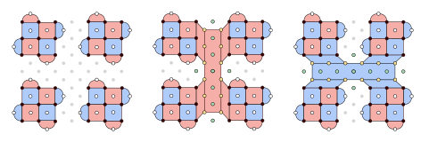
<figcaption class="paper-figure-caption"><b>Fig 1.</b> FIG. 1. Stabilizer structure for the t = 3 stitched code, with four rotated surface-code patches connected by the vertical and horizontal GHZ corridors for the outer-code generators. Filled and open circles, respectively, represent data and an- cillary qubits.</figcaption>
</figure>
<figure class="paper-figure-card">
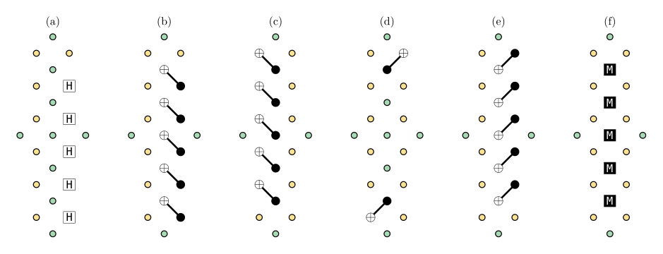
<figcaption class="paper-figure-caption"><b>Fig 2.</b> FIG. 2. A single GHZ preparation round for patch distance t = 3, in six time steps (a)–(f). Neighboring corridor qubits are clustered into small GHZ states, intermediate qubits are measured, and the outcomes are absorbed virtually into the detector frame to align the GHZ branches.</figcaption>
</figure>
<figure class="paper-figure-card">
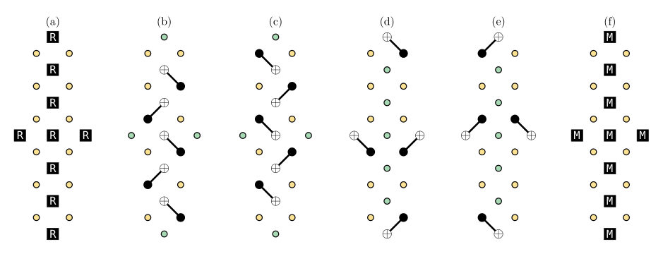
<figcaption class="paper-figure-caption"><b>Fig 3.</b> FIG. 3. A single GHZ verification round for patch distance t = 3, in six time steps (a)–(f). Pairwise ZZ parities along the corridor are measured by short-depth CNOT circuits using the ancillae on the corridor’s center line, detecting X errors on the GHZ resource state before the transversal CNOT gates couple it to the surface-code patches.</figcaption>
</figure>
<figure class="paper-figure-card">
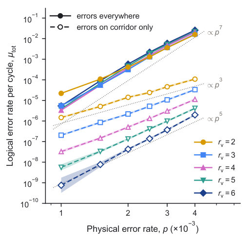
<figcaption class="paper-figure-caption"><b>Fig 4.</b> FIG. 4. Logical error rate µtot per surface-code cycle (Sec. V A) versus physical error rate p for patch distance t = 7 under SI1000 noise, with rv = 2–6 GHZ verification rounds (Sec. III B). Solid curves: errors present on all oper- ations (pbulk = pGHZ). Dashed curves: errors present on the GHZ corridor only (pbulk = 0). Dotted lines are guides to the eye ∝p3, p5, p7. Bands are 95% Wilson intervals.</figcaption>
</figure>
<figure class="paper-figure-card">

<figcaption class="paper-figure-caption"><b>Fig 5.</b> Figure 5 compares the logical error rate of the stitched code against two independent rotated surface- code patches of varying distance under SI1000; Fig. 11 in Appendix C repeats the comparison under the uniform depolarizing model. In both models the stitched code’s logical error rate scales as pt (slope t on log-log axes), consistent with code distance d = 2t.</figcaption>
</figure>
</div>

<p><strong>Summary.</strong> This work introduces a novel, fault-tolerant quantum memory architecture by stitching together multiple surface-code patches using an outer [[4,2,2]] code. The method uses GHZ ancillae in narrow corridors for syndrome measurement, allowing for efficient decoding via a single matching pass. Experimentally, the construction demonstrates robust error suppression on superconducting hardware, advancing the field toward scalable quantum computation.</p>
<p><strong>Why it may be interesting.</strong> It provides a concrete, near-term hardware testbed for advanced concatenated quantum error correction beyond the standard surface code, which is highly relevant for experimental quantum information scientists.</p>
<details>
<summary>Detailed structure</summary>
<p><strong>Main problem.</strong> The paper presents a fault-tolerant quantum-memory architecture by concatenating multiple surface-code patches using an outer [[4,2,2]] code.</p>
<p><strong>Main result.</strong> The constructed architecture successfully encodes two logical qubits with distance $d=2t$ while maintaining nearest-neighbor connectivity, showing error rate scaling consistent with theory.</p>
<p><strong>Method.</strong> The outer-code stabilizers are measured in situ using verified Greenberger-Horne-Zeilinger (GHZ) ancillae distributed through narrow corridors between patches, and decoding is achieved via a single minimum-weight-perfect-matching pass.</p>
<p><strong>Model / system.</strong> The system is a stitched surface code composed of four distance-$t$ rotated surface-code patches connected by GHZ corridors, implemented experimentally on a 105-qubit Willow superconducting processor.</p>
<p><strong>Key observables.</strong> Logical error rates ($\sim p^t$), block logical error rate reduction factor (1.52 when increasing $d$ from 4 to 6), and detector fire probabilities.</p>
<p><strong>Important parameters / regimes.</strong> Code distance $d=2t$, physical qubit count $N < 2(2t+1)^2$, and the physical error rate $p$.</p>
<p><strong>Assumptions / limitations.</strong> The outer-code gadgets decompose into graphlike components allowing for single MWPM decoding, and the GHZ corridor preparation is constant depth.</p>
<p><strong>Figures summary.</strong> Figures illustrate the stabilizer structure for $t=3$ showing patches connected by GHZ corridors; other figures compare hardware vs. simulation results for detector probabilities and stability.</p>
<p><strong>Paper structure.</strong> The paper details the architecture design, the constant-depth GHZ corridor measurement protocol, the single MWPM decoding scheme, and concludes with experimental validation on superconducting hardware.</p>
</details>
<details>
<summary>Abstract</summary>
<p>We present a fault-tolerant quantum-memory architecture that concatenates four distance-t rotated surface-code patches with the [[4,2,2]] outer code, encoding two logical qubits at code distance d = 2t in a physical footprint of N &lt; 2(2t+1)^2 qubits on a square lattice with nearest-neighbor connectivity. The outer-code stabilizer generators XXXX and ZZZZ, each of physical weight 4t, are measured in situ via verified Greenberger-Horne-Zeilinger (GHZ) ancillae distributed through narrow corridors between adjacent patches, without lattice surgery or long-range gates. The outer-code gadgets introduce hyperedge fault mechanisms, but by design each decomposes into graphlike components, so the complete syndrome is decoded by a single minimum-weight-perfect-matching pass. Circuit-level simulations show logical error rates that scale as p^t, consistent with distance-2t protection. Finally, we implement the construction experimentally on a 105-qubit Willow superconducting processor in both the ZZ and XX memory bases. With the correlated-matching decoder, increasing the code distance from d = 4 to d = 6 reduces the block logical error rate by a factor of 1.52. The construction thus provides a near-term testbed for concatenated architectures beyond the standard surface code.</p>
</details>
<p><sub><a href="#top">↑ back to top</a></sub></p>

<p><a id="paper-2610.21435"></a></p>
<h3 id="accurate-gap-control-of-3d-integrated-superconducting-quantum-circuits-using-asymmetric-indium-architecture-and-multi-angle-flip-chip-bonding"><a href="http://arxiv.org/abs/2610.21435v1">Accurate gap control of 3D-integrated superconducting quantum circuits using asymmetric indium architecture and multi-angle flip-chip bonding</a></h3>
<p><strong>Authors:</strong> L. Richard, N. Bruckmoser, J. Feigl, D. Bunch, A. Bhattacharjee, L. Koch, I. Tsitsilin, V. P. Bader, H. Hu, L. Södergren, S. Filipp<br>
<strong>Type:</strong> experiment · <strong>Category:</strong> quantum information and computing · <strong>PDF:</strong> <a href="https://arxiv.org/pdf/2610.21435v1">https://arxiv.org/pdf/2610.21435v1</a><br>
<strong>Analysis basis:</strong> full PDF text, analyzed in chunks
<strong>Topic relevance:</strong> 🔥 <code>QC/QI experiment</code> <strong>4/5</strong></p>
<div class="figure-strip-hint">↔ Scroll figures horizontally</div>
<div class="paper-figures-scroll">
<figure class="paper-figure-card">
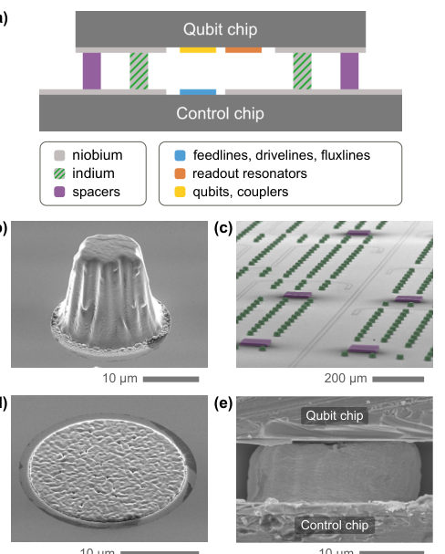
<figcaption class="paper-figure-caption"><b>Fig 1.</b> FIG. 1. Flip-chip module. (a) Schematic of a flip-chip struc- ture in which a control chip and a qubit chip are connected through indium bumps and separated by polymer spacers. The control chip contains the feedlines, drivelines, and flux- lines, while the qubit chip hosts the readout resonators, qubits, and couplers. (b) SEM image of a 20 µm thick indium bump. (c) False-colored SEM image of a typical control-chip ground plane, with indium bumps (colored green) and spacers (colored purple). (d) SEM image of a 200 nm thick indium pad. (e) SEM image of an indium interconnect.</figcaption>
</figure>
<figure class="paper-figure-card">
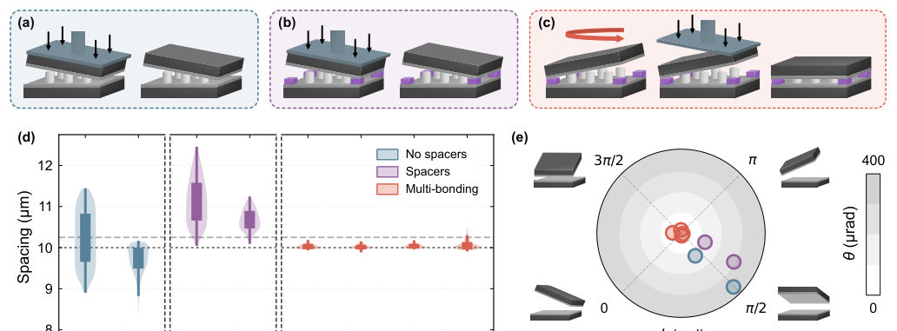
<figcaption class="paper-figure-caption"><b>Fig 2.</b> FIG. 2. Comparison of different bonding approaches. Group (a) Single-bonding process: control and qubit chips are bonded in a single step. Group (b) Single-bonding process including spacers: chips are bonded in a single step; spacers act as hard stops to define a minimum spacing. Group (c) Multi-angle bonding approach including spacers: after the first bond (see (b)), the sample is rotated and compressed again to compensate system-induced tilt. (d) Measurements of the inter-chip spacing for each bonding method shown as violin plots with corresponding quartiles. The gray horizontal line indicates the average spacer height, h = 10.28 ± 0.07 µm, and the 10 µm spacing target is represented in...</figcaption>
</figure>
<figure class="paper-figure-card">
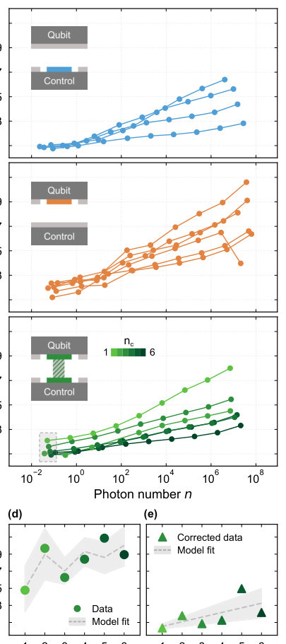
<figcaption class="paper-figure-caption"><b>Fig 3.</b> FIG. 3. Internal quality factors as a function of photon num- ber for resonators in different flip-chip geometries. Error bars are included but remain below the marker size. (a) Resonators located on the control chip. (b) Resonators located on the qubit chip. (c) Resonators with their center conductor dis- tributed between the control and qubit chips and connected with indium transitions. Here, nc denotes the number of in- dium transitions within the center conductor. (d) Internal loss δint of resonators from sub-figure (c) at low photon num- ber versus number of indium transitions nc. The dashed gray line is the model of Eq. (1), with the shaded area showing its 95% confidence interval....</figcaption>
</figure>
<figure class="paper-figure-card">
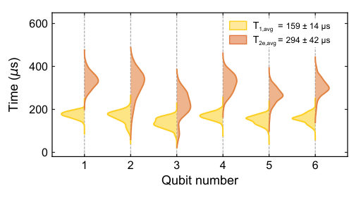
<figcaption class="paper-figure-caption"><b>Fig 4.</b> FIG. 4. T1 and T2,echo measurements of isolated transmon qubits. The measurements, presented in violin plots, are per- formed continuously over a 24-hour period.</figcaption>
</figure>
</div>

<p><strong>Summary.</strong> This paper presents a breakthrough method for 3D integrating superconducting quantum circuits using an asymmetric indium bonding architecture combined with multi-angle compression. This technique solves the critical issues of maintaining precise inter-chip spacing and minimizing systematic tilt, leading to high-coherence transmon qubits comparable to planar devices.</p>
<p><strong>Why it may be interesting.</strong> This work directly addresses hardware limitations in scaling quantum processors, which is crucial for realizing fault-tolerant quantum computation architectures.</p>
<details>
<summary>Detailed structure</summary>
<p><strong>Main problem.</strong> The primary challenge is achieving accurate and uniform control of inter-chip spacing in 3D-integrated superconducting quantum circuits while maintaining high qubit coherence.</p>
<p><strong>Main result.</strong> The combination of an asymmetric indium architecture and a multi-angle flip-chip bonding procedure successfully established a robust method, yielding transmon qubits with coherence times comparable to planar devices.</p>
<p><strong>Method.</strong> The authors employed a novel bonding technique involving asymmetric indium pads and a multi-angle compression procedure to minimize systematic tilt during 3D integration.</p>
<p><strong>Model / system.</strong> The research focuses on superconducting quantum processors utilizing transmon qubits integrated via flip-chip 3D bonding. The system involves a control chip and a qubit chip connected by indium interconnects.</p>
<p><strong>Key observables.</strong> Relaxation time ($T_1$), echo coherence time ($T_{2,echo}$), average post-bonding tilt angle, and inter-chip spacing standard deviation.</p>
<p><strong>Important parameters / regimes.</strong> Indium bump thickness (20 $\mu$m vs 200 nm), target spacing ($\approx 10 \mu$m), and residual tilt ($\approx 20 \mu$rad).</p>
<p><strong>Assumptions / limitations.</strong> Conventional bonding methods are limited by residual contamination or systematic tilt, necessitating the proposed asymmetric and multi-angle approach.</p>
<p><strong>Figures summary.</strong> Figures compare three bonding approaches (single-bond, spacers only, multi-angle) showing improvements in spacing uniformity and reduction of systematic tilt angles.</p>
<p><strong>Paper structure.</strong> The paper progresses by first identifying the limitations of current 3D bonding techniques, then detailing the asymmetric architecture and multi-angle bonding process, followed by comprehensive electrical and microwave characterization of the resulting quantum circuits.</p>
</details>
<details>
<summary>Abstract</summary>
<p>Flip-chip 3D integration is a key enabling technology for overcoming the routing and layout constraints of planar superconducting quantum processors, but it requires accurate and uniform control of the inter-chip spacing while preserving qubit coherence. In conventional processes, thick indium bumps are deposited symmetrically on both chips, while dedicated spacers are introduced to limit the residual tilt. Here, we present a flip-chip bonding process based on an asymmetric indium architecture, combining $20\,μ\mathrm{m}$ thick indium bumps on the control chip with $200\,\mathrm{nm}$ thin indium pads on the qubit chip. Using electrical and microwave measurements, we demonstrate low resistance and low loss indium interconnects, and show that transmon qubits integrated with this process reach relaxation and coherence times of $T_1=(159\pm14)\,μ\mathrm{s}$ and $T_{\mathrm{2,echo}}=(294\pm42)\,μ\mathrm{s}$, respectively, comparable to planar devices. Combined with a multi angle compression procedure that suppresses systematic tilt, this approach reduces the average post bonding tilt to $(20\pm12)\,μ\mathrm{rad}$. These results establish an asymmetric indium architecture combined with multi angle compression as a robust, coherence preserving route toward 3D integrated superconducting quantum processors.</p>
</details>
<p><sub><a href="#top">↑ back to top</a></sub></p>

<p><a id="paper-2610.21428"></a></p>
<h3 id="crossovers-between-time-bin-and-energy-time-entanglement-in-homodyned-resonance-fluorescence"><a href="http://arxiv.org/abs/2610.21428v1">Crossovers between Time-Bin and Energy-Time Entanglement in Homodyned Resonance Fluorescence</a></h3>
<p><strong>Authors:</strong> Zi-Qi Zeng, Jian Wang, Bang Wu, Zhiliang Yuan<br>
<strong>Type:</strong> theory · <strong>Category:</strong> quantum information and computing · <strong>PDF:</strong> <a href="https://arxiv.org/pdf/2610.21428v1">https://arxiv.org/pdf/2610.21428v1</a><br>
<strong>Analysis basis:</strong> full PDF text, analyzed in chunks
<strong>Topic relevance:</strong> 🔥 <code>interference shaping light</code> <strong>4/5</strong></p>
<div class="figure-strip-hint">↔ Scroll figures horizontally</div>
<div class="paper-figures-scroll">
<figure class="paper-figure-card">
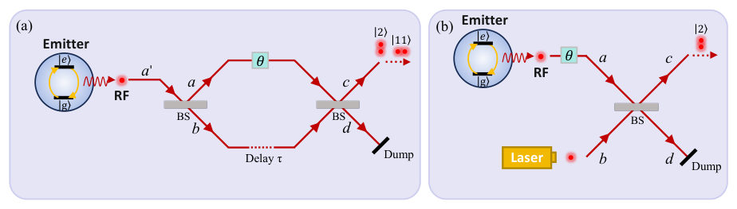
<figcaption class="paper-figure-caption"><b>Fig 1.</b> FIG. 1. Two interference schemes for synthesizing entangled states from RF. (a) Scheme A: self-interference of RF from a coherently driven two-level emitter in an AMZI. The input at port a′ is split into a short arm a with phase θ and a long arm b with delay τ, then recombined at the second BS, with output ports c and d and output state |φ⟩cd. The delay τ is chosen to be much longer than the emitter relaxation time, so that the two temporal modes can each be described by the steady-state emitter–field state of Eq. (1). (b) Scheme B: interference of RF with a coherent laser field |µ⟩at a BS. The coherent amplitude and the relative phase θ allow continuous control over the output state |Ψ⟩cd....</figcaption>
</figure>
<figure class="paper-figure-card">
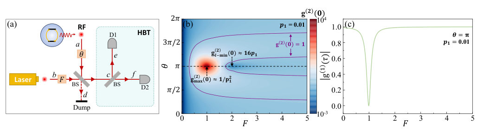
<figcaption class="paper-figure-caption"><b>Fig 2.</b> FIG. 2. Photon-number correlations and first-order coherence in RF–laser interference. (a) Schematic of the second-order correlation measurement. The RF and coherent laser fields interfere at the first BS with relative phase θ and amplitude F. The interference output is directed to an HBT setup to measure g(2)(0). (b) Color map of the zero-delay second-order correlation function g(2)(0) as a function of F and θ for p1 = 0.01. The color scale is logarithmic. The purple curves mark the contour g(2)(0) = 1, separating bunched and antibunched regions. The black dashed line indicates the θ = π cross section, where the homodyne interference is strongest. Along this line, g(2)(0) reaches a...</figcaption>
</figure>
<figure class="paper-figure-card">
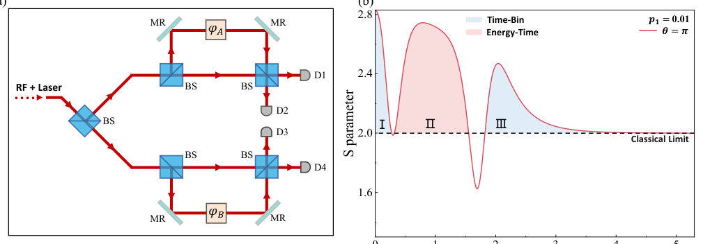
<figcaption class="paper-figure-caption"><b>Fig 3.</b> FIG. 3. Analysis of the CHSH Bell parameter for RF–laser interference. (a) Franson-interferometer configuration. The RF– laser interference field is directed into two analysis AMZIs with relative phases φA and φB. All four output ports are monitored by single-photon detectors, allowing simultaneous measurement of the four coincidence combinations used to construct the CHSH parameter S. (b) S as a function of the relative field amplitude F for θ = π and p1 = 0.01, where the black dashed line indicates the classical limit S = 2. The shaded regions I and III correspond to time-bin entanglement, while region II corresponds to energy–time entanglement.</figcaption>
</figure>
<figure class="paper-figure-card">
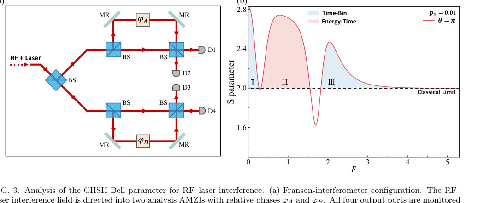
<figcaption class="paper-figure-caption"><b>Fig 4.</b> Figure 3(a) shows the Franson-interferometer configuration used to probe the entanglement of the RF–laser inter- ference field. The field is divided between two analysis AMZIs, each introducing a temporal delay τ ≫T1 and a controllable phase φA or φB, where T1 is the radiative lifetime of the two-level emitter. The two output ports of each AMZI are monitored by single-photon detectors, allowing the four coincidence combinations required for the CHSH analysis to be recorded. The zero-delay coincidence rate for a given pair of interferometer phases is (see Appendix C)</figcaption>
</figure>
<figure class="paper-figure-card">
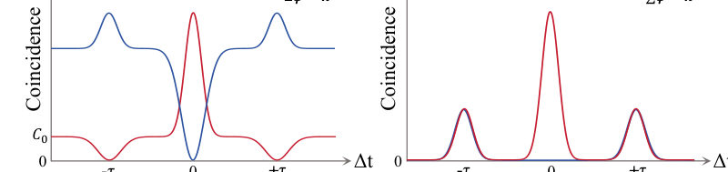
<figcaption class="paper-figure-caption"><b>Fig 5.</b> FIG. 4. Reference simulation for θ = π, with p1 = 10−6. (a) |g(1)(τ)| as a function of F. Inset: a magnified view around F = 1. (b) CHSH Bell parameter S as a function of F. (c) Representative Franson coincidence histogram for the time-bin entanglement regimes at F = 0 and F = 2, where the zero-delay rate depends on ∆φ = φA −φB. The two curves correspond to (φA, φB) = (1.3π, 1.3π) and (1.3π, 0.3π), i.e., ∆φ = 0 and π. First-order coherence causes phase-dependent interference, so the baseline C0 varies with the phase setting. (d) Representative Franson coincidence histogram for the energy–time entanglement regime at F = 1, where the zero-delay coincidence rate depends on Σφ = φA + φB. The...</figcaption>
</figure>
</div>

<p><strong>Summary.</strong> This paper theoretically explores how entanglement between photonic modes can be controlled by tuning the driving field amplitude in a resonance fluorescence setup. By analyzing the resulting photon statistics and measuring the CHSH Bell parameter, the authors demonstrate a continuous crossover between time-bin and energy-time entanglement. This establishes a tunable linear-optics route for generating and controlling quantum entanglement.</p>
<p><strong>Why it may be interesting.</strong> This work provides a concrete, controllable quantum optical platform—homodyne RF—to generate and tune different forms of photonic entanglement (time-bin vs. energy-time), which is highly relevant for quantum communication protocols.</p>
<details>
<summary>Detailed structure</summary>
<p><strong>Main problem.</strong> The paper theoretically investigates the controllable crossover between time-bin and energy-time entanglement generated via homodyning resonance fluorescence.</p>
<p><strong>Main result.</strong> Varying the relative laser-field amplitude causes a continuous crossover between time-bin and energy-time entanglement, which is controlled by destructive interference effects.</p>
<p><strong>Method.</strong> The analysis involves deriving output quantum states for interference schemes and characterizing entanglement using violations of the CHSH Bell inequality.</p>
<p><strong>Model / system.</strong> The system is resonance fluorescence (RF) from a two-level emitter driven by a phase-locked coherent laser field, analyzed through two interference schemes (self-homodyne and interference with a coherent laser).</p>
<p><strong>Key observables.</strong> CHSH Bell parameter (S), photon statistics ($g^{(2)}(0)$), and first-order coherence ($|g^{(1)}(	au)|$).</p>
<p><strong>Important parameters / regimes.</strong> Relative field amplitude ($F$), relative phase ($   heta$), and excitation probabilities ($p_0, p_1$).</p>
<p><strong>Assumptions / limitations.</strong> The analysis assumes steady-state conditions, no pure dephasing, and exact resonance.</p>
<p><strong>Figures summary.</strong> Figure 1 illustrates the two interference schemes (AMZI and coherent laser). Figure 2 shows $g^{(2)}(0)$ and $|g^{(1)}(	au)|$ maps. Figure 3 shows the CHSH parameter $S$ dependence on the field amplitude $F$, demonstrating the entanglement crossover.</p>
<p><strong>Paper structure.</strong> The paper develops the theoretical framework by deriving output states for two interference schemes, analyzes key observables like $g^{(2)}(0)$ and $|g^{(1)}(	au)|$, and culminates in an analytical derivation of the maximal CHSH parameter $S_{max}$ to map the entanglement crossover.</p>
</details>
<details>
<summary>Abstract</summary>
<p>We theoretically investigate photonic entanglement generated by homodyning resonance fluorescence from a two-level emitter with a phase-locked laser field. Under weak excitation, increasing the relative laser-field amplitude produces crossovers from time-bin to energy--time and back to time-bin entanglement. The intermediate energy--time regime occurs near amplitude matching, where destructive interference suppresses the single-photon component, allowing the two-photon contributions to dominate the coincidence signal. We evaluate the resulting photon statistics and first-order coherence and characterize the entanglement through violations of the CHSH Bell inequality in a Franson interferometer. This scheme provides a route to controlling photonic entanglement through linear optics and coherent interference.</p>
</details>
<p><sub><a href="#top">↑ back to top</a></sub></p>

<p><a id="paper-2610.22207"></a></p>
<h3 id="efficient-quantum-simulation-of-unitary-gates-based-on-atomic-ensembles"><a href="http://arxiv.org/abs/2610.22207v1">Efficient quantum simulation of unitary gates based on atomic ensembles</a></h3>
<p><strong>Authors:</strong> Manish Chaudhary, Tim Byrnes<br>
<strong>Type:</strong> theory · <strong>Category:</strong> other · <strong>PDF:</strong> <a href="https://arxiv.org/pdf/2610.22207v1">https://arxiv.org/pdf/2610.22207v1</a><br>
<strong>Analysis basis:</strong> full PDF text, analyzed in chunks
<strong>Topic relevance:</strong> 🔥 <code>analog quantum simulation</code> <strong>4/5</strong></p>
<div class="figure-strip-hint">↔ Scroll figures horizontally</div>
<div class="paper-figures-scroll">
<figure class="paper-figure-card">
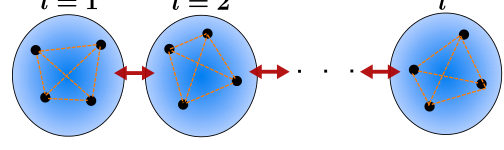
<figcaption class="paper-figure-caption"><b>Fig 1.</b> FIG. 1. Permutation symmetric system of l interacting atomic ensembles: Each particle in an ensemble interacts with other particles in an identical way denoted by dashed lines. Neighboring ensembles are coupled through identical interac- tions (25) denoted by arrows.</figcaption>
</figure>
<figure class="paper-figure-card">
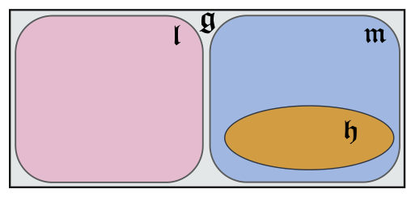
<figcaption class="paper-figure-caption"><b>Fig 2.</b> FIG. 2. Schematic of Cartan decomposition method: The dynamical Lie algebra g is divided into subspaces l and m, i.e. g = l ⊕m based on the involution (11). The subspace l forms a Lie sub algebra and m forms an orthogonal subspace satisfying Lie bracket relations (13). The maximal Abelian subalgebra h is contained within m.</figcaption>
</figure>
<figure class="paper-figure-card">
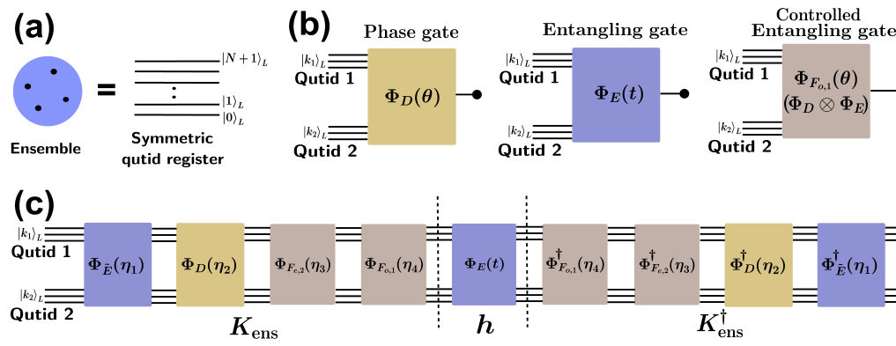
<figcaption class="paper-figure-caption"><b>Fig 3.</b> FIG. 3. Ensemble based optimized circuit implementation of the interaction Hamiltonian (25): (a) Ensemble as a symmetric Qutid: An ensemble of N identical spins restricted to the fully symmetric Dicke manifold is represented as an effective (N +1)- dimensional collective qudit register. The Dicke basis states encode the collective excitation sectors of the ensemble; (b) Various ensemble gates in the collective-qudit encoding: the Dicke-state mapping (44) enables a circuit realization for various collective gates. We consider collective Phase gate, ΦD(θ), Entangling gate ΦE, ˜ E(t) and controlled Entangling gate ΦFe,o;j(θ). Action of these gates on Dicke basis is defined in Eqs. (46), (48),...</figcaption>
</figure>
<figure class="paper-figure-card">
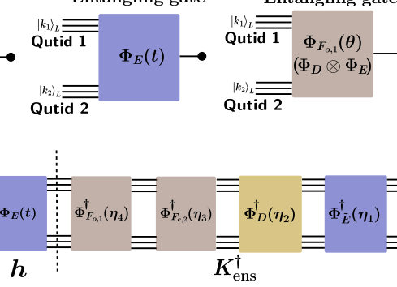
<figcaption class="paper-figure-caption"><b>Fig 4.</b> Fig. 4(a) calculates the time evolution of the collective spin expectation values (51) obtained from the exact dynamics (41) generated by the Hamiltonian and com- pares with the Cartan decomposition evolution (40) and Suzuki Trotter evolution (42). It is observed that the exact dynamics (solid lines) exhibit the coherent trans- fer of spin polarization between the two ensembles. For a given spin polarized initial state (6), Sx l spin expecta- tion value undergoes large-amplitude oscillations, while</figcaption>
</figure>
<figure class="paper-figure-card">
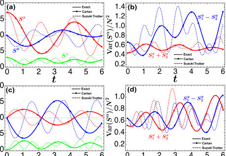
<figcaption class="paper-figure-caption"><b>Fig 5.</b> FIG. 4. Time evolution of system dynamics using exact and Cartan unitary: (a),(c) the collective spin expectation val- ues (51); (b),(d) the variances (55) in the combination of the spin components as a function of the interaction time t for dif- ferent initial states (6) for N = 3 per ensemble. Solid curves denote the exact quantum evolution, while the dashed curves correspond to the Suzuki Trotter based dynamics. The ini- tial spin polarized state is chosen as | π</figcaption>
</figure>
</div>

<p><strong>Summary.</strong> This paper presents a novel, highly efficient quantum simulation technique for evolving spin Hamiltonians in atomic ensembles using the Cartan decomposition method. By leveraging the Lie algebraic structure, it constructs a quantum circuit that achieves near-zero error, which significantly outperforms the error scaling of traditional Suzuki-Trotter product formulas, especially for large numbers of atoms.</p>
<p><strong>Why it may be interesting.</strong> This work provides a powerful, theoretically grounded tool for quantum simulation in AMO platforms, offering a superior scaling advantage over standard Trotterization for large, interacting ensembles by exploiting underlying symmetries.</p>
<details>
<summary>Detailed structure</summary>
<p><strong>Main problem.</strong> Developing an efficient method for simulating the unitary time evolution of a general spin Hamiltonian in systems with collective spin symmetries.</p>
<p><strong>Main result.</strong> The Cartan decomposition protocol achieves zero error in reproducing operator dynamics compared to the Suzuki-Trotter formula, whose error increases with system size.</p>
<p><strong>Method.</strong> The authors employ the Cartan decomposition method on the associated Hamiltonian Lie algebra to construct symmetry-adapted generators, allowing for an optimized, shallow quantum circuit representation of the time evolution.</p>
<p><strong>Model / system.</strong> The study focuses on permutation symmetric atomic ensembles (e.g., neutral atoms or BECs) whose dynamics are governed by collective spin operators. The Hamiltonian is a sum of these spin operators.</p>
<p><strong>Key observables.</strong> Operator dynamics, spin expectation values, fluctuation observables, and the error ($\epsilon$) relative to exact time evolution.</p>
<p><strong>Important parameters / regimes.</strong> Ensemble size ($N$), simulation time ($t$), and the comparison between Cartan error ($\epsilon_{	ext{Cartan}}$) and Trotter error ($\epsilon_{	ext{Trotter}}$).</p>
<p><strong>Assumptions / limitations.</strong> The primary assumption for the zero error is that the generator set is complete and the optimization yields exact parameters; otherwise, the error is bounded by the difference between the full and decomposed Hamiltonian ($\Delta H$).</p>
<p><strong>Figures summary.</strong> Figures schematically illustrate interacting ensemble systems and the Cartan decomposition method, showing the decomposition of the Lie algebra into $\mathfrak{l} \oplus \mathfrak{m}$. Figure 5 compares the error scaling of Cartan vs. Suzuki-Trotter methods with respect to time and size.</p>
<p><strong>Paper structure.</strong> The paper first introduces the problem of unitary evolution simulation, then details the Lie-algebraic framework and the Cartan decomposition. It proceeds to apply this method to specific physical models (like two-ensemble squeezing) and concludes with a rigorous comparison of error bounds against standard Trotterization.</p>
</details>
<details>
<summary>Abstract</summary>
<p>We develop a technique to perform efficient unitary time evolution of a general spin Hamiltonian based on the system with identical qubits, as naturally realized by permutation symmetric atomic ensembles. We employ Cartan decomposition method to the associated Hamiltonian Lie algebra and construct the symmetry adapted generators to implement unitary operator of the ensemble Hamiltonian. This enables the compact circuit representations of the system dynamics in terms of experimentally accessible collective spin operations and exploits the Dicke basis structure of the ensembles as an effective qudit representation. We benchmark Cartan based evolution against both exact time evolution and the Suzuki Trotter product formula. Our results show that the Cartan protocol accurately reproduces the operator dynamics, spin expectation values, and fluctuation observables with zero error that are substantially smaller than those obtained through Trotterization while maintaining an optimized circuit structure. In addition, scaling analysis with the ensemble size demonstrates that the Cartan error remains independent of the atom number while the corresponding Trotter error increases with the system size, highlighting the improved efficiency of the Cartan approach for a larger system size.</p>
</details>
<p><sub><a href="#top">↑ back to top</a></sub></p>

<p><a id="paper-2610.20855"></a></p>
<h3 id="perfect-and-peak-state-transfer-on-ibm-quantum-hardware"><a href="http://arxiv.org/abs/2610.20855v1">Perfect and peak state transfer on IBM quantum hardware</a></h3>
<p><strong>Authors:</strong> Priscilla Awuah, Krystal Guo<br>
<strong>Type:</strong> both · <strong>Category:</strong> quantum information and computing · <strong>PDF:</strong> <a href="https://arxiv.org/pdf/2610.20855v1">https://arxiv.org/pdf/2610.20855v1</a><br>
<strong>Analysis basis:</strong> full PDF text, analyzed in chunks
<strong>Topic relevance:</strong> 🔥 <code>QC/QI experiment</code> <strong>4/5</strong></p>
<div class="figure-strip-hint">↔ Scroll figures horizontally</div>
<div class="paper-figures-scroll">
<figure class="paper-figure-card">
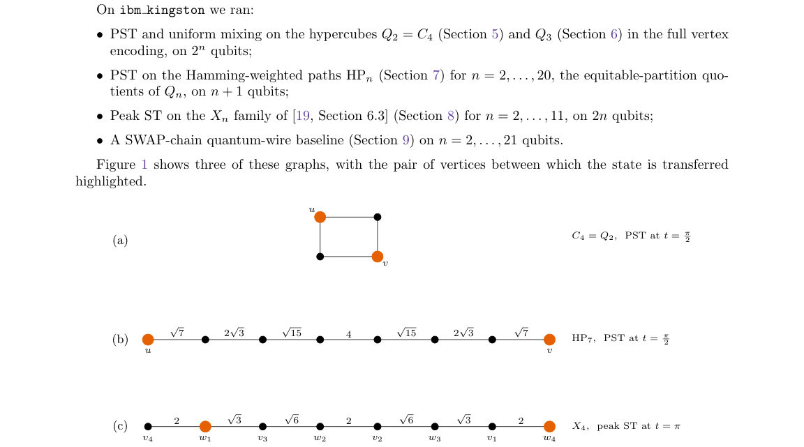
<figcaption class="paper-figure-caption"><b>Fig 1.</b> Figure 1: Three of the graphs we run, with the transfer pair highlighted in orange. (a) The 4-cycle C4 = Q2, which admits PST between antipodal vertices u, v at t = π/2 (all edge weights 1). (b) The Hamming- weighted path HP7 on 8 vertices (the equitable-partition quotient of the hypercube Q7), with edge weights p</figcaption>
</figure>
<figure class="paper-figure-card">
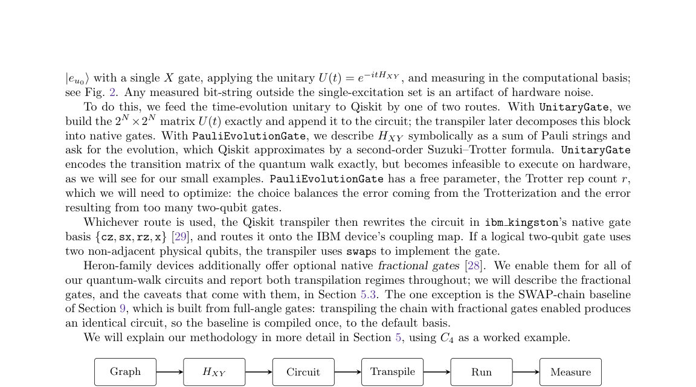
<figcaption class="paper-figure-caption"><b>Fig 2.</b> Figure 2: The implementation pipeline, from a graph G to measurement on IBM Quantum hardware.</figcaption>
</figure>
<figure class="paper-figure-card">
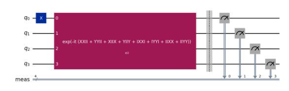
<figcaption class="paper-figure-caption"><b>Fig 3.</b> Figure 4: Logical circuit for Vexp(π/2) = e−iπH/2 · X00 on four qubits. The barrier separates the evolution from the measurements on the four qubits.</figcaption>
</figure>
<figure class="paper-figure-card">
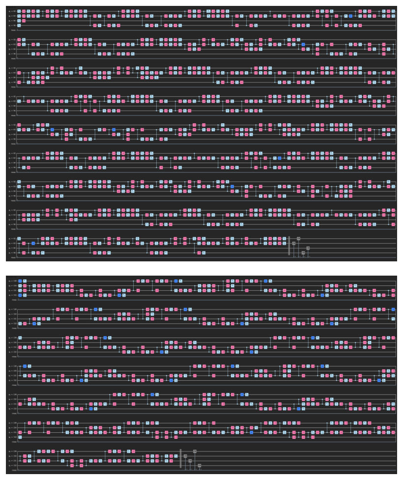
<figcaption class="paper-figure-caption"><b>Fig 4.</b> Figure 5: The full transpiled C4 PST circuits at t = π/2 on ibm kingston, in the default cz basis. (Top) UnitaryGate. (Bottom) PauliEvolutionGate at r = 8.</figcaption>
</figure>
<figure class="paper-figure-card">
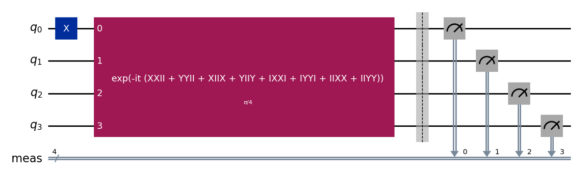
<figcaption class="paper-figure-caption"><b>Fig 5.</b> Figure 6: Logical circuit for Vexp(π/4) = e−iπH/4 · X00, the uniform-mixing circuit on C4. Identical to Fig. 4 except for the evolution time, which is π/4 rather than π/2.</figcaption>
</figure>
</div>

<p><strong>Summary.</strong> This paper experimentally tests the phenomenon of Perfect and Peak State Transfer using continuous-time quantum walks on a superconducting quantum processor. By implementing the dynamics derived from the XY Hamiltonian on graph structures like hypercubes, the authors demonstrate state transfer fidelity on current NISQ hardware. It serves as a crucial benchmark, comparing theoretical quantum walk predictions against real-world, noisy quantum computation results.</p>
<p><strong>Why it may be interesting.</strong> This work is highly relevant as it bridges theoretical graph theory results (PST) with the practical limitations and capabilities of near-term quantum hardware, providing a concrete testbed for quantum simulation algorithms.</p>
<details>
<summary>Detailed structure</summary>
<p><strong>Main problem.</strong> The paper investigates the feasibility of achieving Perfect State Transfer (PST) and Peak State Transfer (peak ST) using continuous-time quantum walks on current superconducting quantum hardware.</p>
<p><strong>Main result.</strong> The authors successfully demonstrated the implementation of PST and peak ST on specific graph families, such as hypercubes and Hamming-weighted paths, using the noisy IBM quantum processor.</p>
<p><strong>Method.</strong> The continuous-time quantum walk is simulated and executed on the IBM Quantum hardware by transpiling the required time evolution operator, $e^{-itH}$, into native quantum gates.</p>
<p><strong>Model / system.</strong> The system models quantum walks on graphs $G$ (e.g., hypercubes $Q_n$), governed by an XY Hamiltonian, $H_{XY}$. The experiment is performed on the IBM Quantum 156-qubit Heron superconducting processor.</p>
<p><strong>Key observables.</strong> The primary observables are the transition probabilities $|U(t)_{v,u}|^2$ between vertices, used to diagnose PST ($|U(t)|=1$) or peak ST (maximizing $|U(t)|$).</p>
<p><strong>Important parameters / regimes.</strong> The key parameters include the graph structure ($Q_n, HP_n, X_n$), the time $t$ (or $    au$), and the Trotter repetition count $r$ used in the gate approximation.</p>
<p><strong>Assumptions / limitations.</strong> The experiments are performed naively on noisy hardware without error correction or mitigation, and the time evolution is approximated using the Suzuki–Trotter formula.</p>
<p><strong>Figures summary.</strong> Figures illustrate example graphs ($C_4, HP_7, X_4$) and show the implementation pipeline, detailing the steps from the graph structure to the final measurement circuit on the hardware.</p>
<p><strong>Paper structure.</strong> The paper establishes the theoretical background of PST/peak ST, details the continuous-time quantum walk Hamiltonian and its mapping to quantum gates, and then presents experimental results across various graph families ($Q_n, HP_n, X_n$) on the IBM hardware, comparing results with noiseless simulations.</p>
</details>
<details>
<summary>Abstract</summary>
<p>We run continuous-time quantum walks with perfect and peak state transfer on a present-day superconducting quantum processor, IBM Quantum's $156$-qubit Heron device ibm_kingston, deliberately without error correction or error mitigation. Perfect state transfer and its relaxations have been studied extensively in algebraic graph theory, where one can prove exactly which graphs move a quantum state from one vertex to another with probability one (or with the largest probability the graph allows, in the case of peak state transfer), and at what time. Our experiments cover perfect state transfer on the hypercubes $Q_2 = C_4$ and $Q_3$, and on the Hamming-weighted paths $\mathrm{HP}_n$, the equitable-partition quotients of the hypercubes $Q_n$, for $n$ up to $20$; peak state transfer on the $X_n$ family for $n$ up to $11$; and, for comparison, moving the state along a path of qubits by a sequence of SWAP gates.</p>
</details>
<p><sub><a href="#top">↑ back to top</a></sub></p>

<p><a id="paper-2610.21523"></a></p>
<h3 id="non-equilibrium-muon-dynamics-imitating-fractional-spin-excitations-in-a-quantum-spin-chain"><a href="http://arxiv.org/abs/2610.21523v1">Non-equilibrium Muon Dynamics Imitating Fractional Spin Excitations in a Quantum Spin Chain</a></h3>
<p><strong>Authors:</strong> A. Hromov, A. Zorko, M. Gomilšek, P. J. Baker, A. Prokofiev, M. Pregelj<br>
<strong>Type:</strong> both · <strong>Category:</strong> strongly correlated electrons · <strong>PDF:</strong> <a href="https://arxiv.org/pdf/2610.21523v1">https://arxiv.org/pdf/2610.21523v1</a><br>
<strong>Analysis basis:</strong> full PDF text, analyzed in chunks
<strong>Topic relevance:</strong> <code>analog quantum simulation</code> <strong>3/5</strong> · <code>quantum measurements</code> <strong>3/5</strong> · <code>Keldysh / 2PI / non-Gaussian methods</code> <strong>2/5</strong> · <code>correlated / nonlocal dissipation</code> <strong>2/5</strong> · <code>driven-dissipative phase transition</code> <strong>2/5</strong> · <code>methods for driven-dissipative</code> <strong>2/5</strong> · <code>non-equilibrium universality</code> <strong>2/5</strong> · <code>scars &amp; prethermalization</code> <strong>2/5</strong> · <code>Frenkel-Kontorova</code> <strong>1/5</strong></p>
<div class="figure-strip-hint">↔ Scroll figures horizontally</div>
<div class="paper-figures-scroll">
<figure class="paper-figure-card">
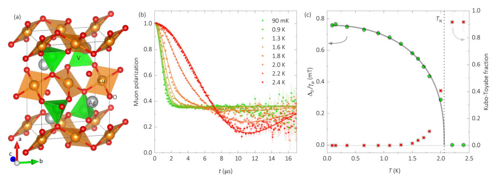
<figcaption class="paper-figure-caption"><b>Fig 1.</b> FIG. 1. Temperature dependence of muon spin relaxation. (a) Crystal structure of AgCuVO4. (b) Muon polarization decay curves measured at various temperatures in zero applied field, along with the corresponding fits (see the main text for model details). (c) Temperature dependence of the low-temperature mean local magnetic field and of the fraction of the nuclear Kubo-Toyabe contribution. The solid line represents a fit to the Curie–Bloch expression [1 −(T/TN)α]β, while the dotted line marks the N´eel transition temperature TN.</figcaption>
</figure>
<figure class="paper-figure-card">
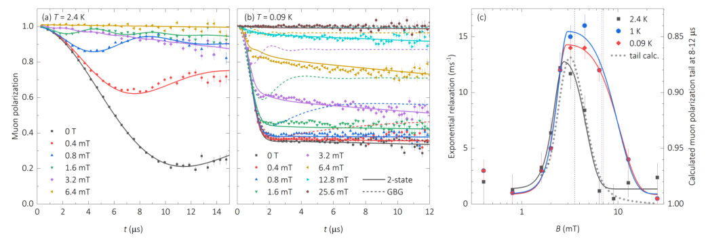
<figcaption class="paper-figure-caption"><b>Fig 2.</b> FIG. 2. Muon spin relaxation in longitudinal magnetic fields. Muon polarization curves measured at (a) 2.4 K and (b) 0.09 K. In panel (a), the solid lines represent fits using the KT model for a longitudinal field, combined with exponential relaxation. In panel (b), solid and dashed lines correspond to fits using the two-state and GBG models, respectively. (c) Relaxation rates, λ(B), extracted from the fits as a function of applied magnetic field at different temperatures. Solid lines are empirical fits to bigaussian peak shapes (see Methods), while vertical lines mark the positions of their corresponding mean values. Thick dotted line denotes the calculated QLCR effect on muon polarization...</figcaption>
</figure>
<figure class="paper-figure-card">
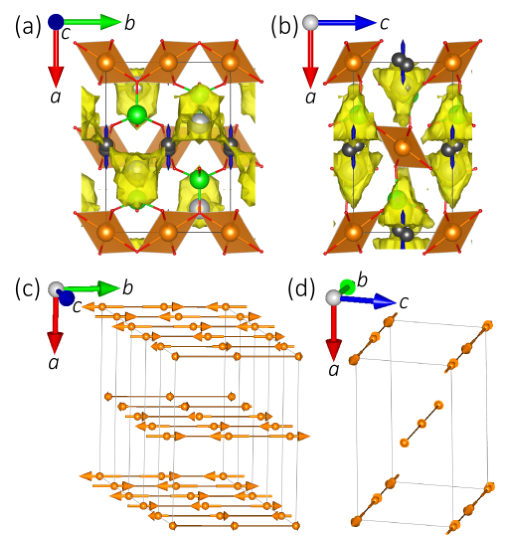
<figcaption class="paper-figure-caption"><b>Fig 3.</b> FIG. 3. Crystal and magnetic structure of AgCuVO4 viewed along two different directions. Panels (a) and (b) display the crystal structure, where atoms are represented as spheres: Cu (brown), V (green), Ag (light gray), and O (red). The muon stopping site is indicated by a dark gray sphere. Regions where the mean nuclear magnetic field equals 0.35 mT are highlighted in light yellow, while areas corresponding to a magnetic field of 2.8 mT (matching the experimentally deter- mined value at base temperature), associated with the mag- netic structure model with magnetic moments aligned along b, are shown in dark blue. Panels (c) and (d) display the cor- responding magnetic order.</figcaption>
</figure>
</div>

<p><strong>Summary.</strong> This research investigates the spin dynamics in the magnetic material AgCuVO4 using muon spin spectroscopy. While initial data suggested exotic fractional spin excitations, the authors propose that the observed muon relaxation is better explained by the muon undergoing quantum delocalization and hopping between two nearby lattice sites. This work highlights the importance of detailed microscopic modeling to correctly interpret complex magnetic signatures.</p>
<p><strong>Why it may be interesting.</strong> The work provides a crucial example of how experimental signatures (like field-resilient decay) can be misinterpreted; the rigorous application of site-specific calculations (DFT/QLCR) to explain the dynamics is highly relevant to understanding complex open quantum systems.</p>
<details>
<summary>Detailed structure</summary>
<p><strong>Main problem.</strong> To determine the physical origin of the muon spin relaxation observed in the frustrated magnetic material AgCuVO4, distinguishing between intrinsic spin fluctuations and alternative dynamic mechanisms.</p>
<p><strong>Main result.</strong> The observed muon polarization decay is best explained by the muon randomly hopping between two nearby lattice sites, a mechanism that mimics the signature of sporadic spin dynamics but is rooted in non-equilibrium muon dynamics.</p>
<p><strong>Method.</strong> The study combines muon spin spectroscopy (muSR) experiments with Density Functional Theory (DFT) calculations to model local magnetic fields and quantum mechanical transitions.</p>
<p><strong>Model / system.</strong> The system is the spin-1/2 chain compound AgCuVO4, which exhibits complex magnetic ordering. The analysis utilizes a two-state model describing muon hopping between two sites, alongside theoretical frameworks like the Kubo-Toyabe and Gaussian-Broadened-Gaussian models.</p>
<p><strong>Key observables.</strong> Muon polarization decay curves, Gaussian decay resilience to magnetic fields, and Quadrupolar Level-Crossing Resonance (QLCR) spectra.</p>
<p><strong>Important parameters / regimes.</strong> Magnetic ordering temperature ($T_N \approx 2.0$ K), muon hopping rate, and local magnetic field parameters derived from DFT.</p>
<p><strong>Assumptions / limitations.</strong> The initial assumption linking Gaussian decay to intrinsic spin fluctuations is challenged by the successful fitting using the muon hopping model; DFT calculations assume specific exchange interactions (Hubbard repulsion U).</p>
<p><strong>Figures summary.</strong> Figures illustrate temperature dependence of relaxation, polarization decay curves under applied fields, and the fit of the relaxation rate $\lambda(B)$ using the QLCR mechanism.</p>
<p><strong>Paper structure.</strong> The paper progresses from initial $\mu$SR observations suggesting sporadic spin dynamics, through detailed analysis using LF $\mu$SR and QLCR, to finally proposing and validating the two-site muon hopping model using DFT calculations.</p>
</details>
<details>
<summary>Abstract</summary>
<p>Fractional spin excitations in low-dimensional and frustrated magnets are commonly associated with sporadic spin fluctuations, as observed in quantum spin liquids, spin ices, and other complex magnetic states. In this study, we investigate the spin dynamics in the amplitude-modulated magnetic ground state of AgCuVO$_4$, a spin-1/2 chain compound with competing intrachain interactions, by muon spectroscopy. Our data reveal a Gaussian decay of muon polarization that remains remarkably resilient against applied magnetic fields---a behavior often interpreted as evidence of emergent sporadic spin dynamics. However, density functional theory calculations of muon stopping sites and their quadrupolar level-crossing resonance spectra suggest an alternative mechanism: a two-state model where the muon randomly hops between two nearby sites, eventually equilibrating across both on a microsecond timescale via quantum delocalization. These findings provide a microscopic explanation for the field-resilient muon polarization and indicate that such behavior may not always stem from intrinsic spin fluctuations, but can also arise from non-equilibrium muon dynamics.</p>
</details>
<p><sub><a href="#top">↑ back to top</a></sub></p>

<p><a id="paper-2610.21608"></a></p>
<h3 id="driving-the-cooling-process-of-a-quantum-system-via-classical-noise"><a href="http://arxiv.org/abs/2610.21608v1">Driving the cooling process of a quantum system via classical noise</a></h3>
<p><strong>Authors:</strong> B. Militello, A. Napoli<br>
<strong>Type:</strong> theory · <strong>Category:</strong> statistical mechanics · <strong>PDF:</strong> <a href="https://arxiv.org/pdf/2610.21608v1">https://arxiv.org/pdf/2610.21608v1</a><br>
<strong>Analysis basis:</strong> full PDF text, analyzed in chunks
<strong>Topic relevance:</strong> <code>driven-dissipative phase transition</code> <strong>3/5</strong> · <code>methods for driven-dissipative</code> <strong>3/5</strong> · <code>non-equilibrium universality</code> <strong>3/5</strong> · <code>Keldysh / 2PI / non-Gaussian methods</code> <strong>2/5</strong> · <code>scars &amp; prethermalization</code> <strong>2/5</strong> · <code>analog quantum simulation</code> <strong>1/5</strong> · <code>correlated / nonlocal dissipation</code> <strong>1/5</strong> · <code>quantum measurements</code> <strong>1/5</strong></p>
<div class="figure-strip-hint">↔ Scroll figures horizontally</div>
<div class="paper-figures-scroll">
<figure class="paper-figure-card">
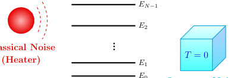
<figcaption class="paper-figure-caption"><b>Fig 1.</b> FIG. 1: Scheme of a N-state system interacting with a source of classical noise, behaving as a heater, and a zero- temperature quantum reservoir, behaving as a freezer.</figcaption>
</figure>
<figure class="paper-figure-card">
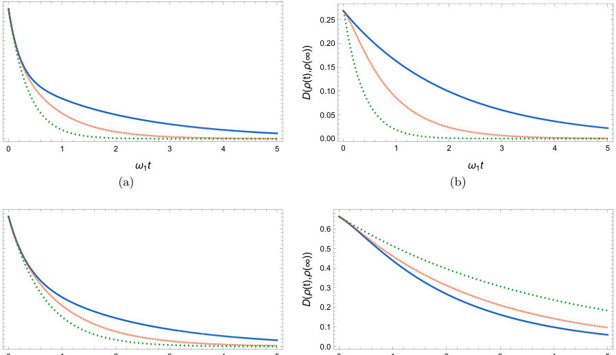
<figcaption class="paper-figure-caption"><b>Fig 2.</b> FIG. 3: Distance between the steady (zero-temperature) state ρ(∞) and the evolved state ρ(t), with the ρ(0) a Gibbs state at inverse temperature β. In all plots η01 = η02 = 0 and three different values of η12 are considered: η12/ω1 = 0 (blue solid curve), η12/ω1 = 0.1 (red dotted curve), η12/ω1 = 5 (green dashed curve). In (a) ω2/ω1 = 1.5, γ10/ω1 = 0.05, γ20/ω1 = 0.5, γ21/ω1 = 0 and βω1 = 0.01. In (b) ω2/ω1 = 1.5, γ10/ω1 = 0.05, γ20/ω1 = 0.5, γ21/ω1 = 0 and βω1 = 10. In (c) ω2/ω1 = 3, γ20 = 0, γ10/ω1 = 0.3, γ21/ω1 = 0.05 and βω1 = 0.01. In (d) ω2/ω1 = 3, γ20 = 0, γ10/ω1 = 0.05, γ21/ω1 = 0.3 and βω1 = 0.01.</figcaption>
</figure>
</div>

<p><strong>Summary.</strong> This paper theoretically analyzes how classical noise influences the cooling dynamics of a quantum system approaching absolute zero. It shows that this noise can counterintuitively accelerate the cooling process by selectively exciting the system's higher energy states. The findings are significant for understanding non-equilibrium thermalization processes in open quantum systems.</p>
<p><strong>Why it may be interesting.</strong> This work directly addresses non-equilibrium dynamics and thermalization pathways, which are central topics in open quantum systems and statistical mechanics, particularly concerning how external driving fields affect relaxation rates.</p>
<details>
<summary>Detailed structure</summary>
<p><strong>Main problem.</strong> The paper investigates whether the introduction of classical noise can accelerate the cooling process of a quantum system towards its zero-temperature thermal state, suggesting a counterintuitive effect.</p>
<p><strong>Main result.</strong> Classical noise can accelerate cooling by acting as a selective 'heater' on the excited subspace, even though it drives the system toward a state that mimics an infinite-temperature reservoir.</p>
<p><strong>Method.</strong> The analysis employs a perturbation approach, treating the system evolution governed by a Lindblad master equation containing both quantum and classical noise terms.</p>
<p><strong>Model / system.</strong> The model is an N-state quantum system whose evolution is described by a Lindblad-type master equation incorporating a system Hamiltonian ($H_S$), quantum noise ($L_Q$), and classical noise ($L_C$).</p>
<p><strong>Key observables.</strong> Ground state population decay rate ($\epsilon$) and the distance $D(
ho(t), 
ho(\infty))$ over time.</p>
<p><strong>Important parameters / regimes.</strong> The ratio of classical noise strength to quantum noise strength ($\xi \gg 1$) is a key parameter for the perturbation analysis.</p>
<p><strong>Assumptions / limitations.</strong> The analysis relies on the assumption that the classical noise is much stronger than the quantum noise ($\xi \gg 1$) to simplify the master equation into a solvable form.</p>
<p><strong>Figures summary.</strong> Figure 1 illustrates the system interacting with both classical noise (Heater) and quantum noise (Freezer). Figure 3 shows simulations comparing cooling dynamics under different noise strengths, demonstrating acceleration or deceleration.</p>
<p><strong>Paper structure.</strong> The paper introduces the physical model and the master equation, develops the perturbation theory in the strong classical noise limit, derives the decay rate $\epsilon$, and concludes with numerical simulations demonstrating the acceleration/deceleration effect.</p>
</details>
<details>
<summary>Abstract</summary>
<p>It is known that under particular hypotheses anomalous thermalization processes can occur, such as the Mpemba effect, consisting in a faster cooling down when the system is prepared in a hotter initial condition, thus making convenient to warm up the system before the freezing process in order to make it freeze in a shorter time. It is shown here that the action of a Markovian classical noise during the freezing process can accelerate the approach to the zero-temperature thermal state. This prediction is counterintuitive, especially after observing that a classical noise can be considered equivalent to the action of an infinite-temperature reservoir, since both drive the system toward the same state. These facts lead to the statement that warming up the system during the contact with a low-temperature reservoir can accelerate the cooling process.</p>
</details>
<p><sub><a href="#top">↑ back to top</a></sub></p>

<p><a id="paper-2610.20765"></a></p>
<h3 id="standard-and-bipolar-rectification-in-tilted-periodically-driven-quantum-systems"><a href="http://arxiv.org/abs/2610.20765v1">Standard and Bipolar Rectification in Tilted Periodically-Driven Quantum Systems</a></h3>
<p><strong>Authors:</strong> Joaquín Peñuela-Parra, Juan José Mendoza-Arenas<br>
<strong>Type:</strong> theory · <strong>Category:</strong> statistical mechanics · <strong>PDF:</strong> <a href="https://arxiv.org/pdf/2610.20765v1">https://arxiv.org/pdf/2610.20765v1</a><br>
<strong>Analysis basis:</strong> full PDF text, analyzed in chunks
<strong>Topic relevance:</strong> <code>analog quantum simulation</code> <strong>3/5</strong> · <code>driven-dissipative phase transition</code> <strong>3/5</strong> · <code>methods for driven-dissipative</code> <strong>3/5</strong> · <code>non-equilibrium universality</code> <strong>3/5</strong> · <code>Keldysh / 2PI / non-Gaussian methods</code> <strong>2/5</strong> · <code>Frenkel-Kontorova</code> <strong>1/5</strong> · <code>correlated / nonlocal dissipation</code> <strong>1/5</strong></p>
<div class="figure-strip-hint">↔ Scroll figures horizontally</div>
<div class="paper-figures-scroll">
<figure class="paper-figure-card">
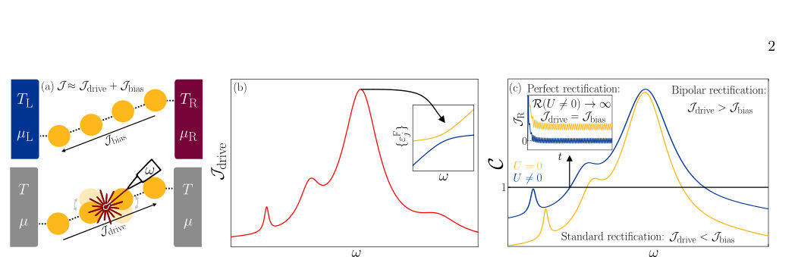
<figcaption class="paper-figure-caption"><b>Fig 1.</b> FIG. 1. Qualitative illustration of the rectification mechanism and its two regimes for particle transport. (a) The two current contributions isolated separately. Top: without external driving, the chain couples to baths L and R at different temperatures and/or chemical potentials, so only the bias-induced current Jbias flows (from right to left in the reverse configuration). Bottom: the driven chain S couples to baths at a common temperature T and chemical potential µ, so only the drive-induced current Jdrive flows. When driving and bias act simultaneously, the total current is J ≈Jdrive + Jbias. (b) Jdrive as a function of the frequency ω of the drive. Its peaks coincide with avoided...</figcaption>
</figure>
<figure class="paper-figure-card">
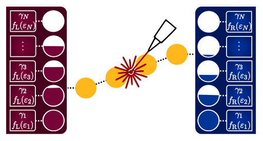
<figcaption class="paper-figure-caption"><b>Fig 2.</b> FIG. 2. Schematic of the setup. The system S (gold circles) is a chain coupled at its boundaries to two baths, L (maroon) and R (blue), each modeled using the mesoscopic-leads ap- proach: a finite collection of modes εk, each damped towards a thermal occupation fL(R)(εk) at a rate γk, indicated by the filling of each circle. A laser (represented by the emitting tip) illuminates the central sites of S.</figcaption>
</figure>
<figure class="paper-figure-card">
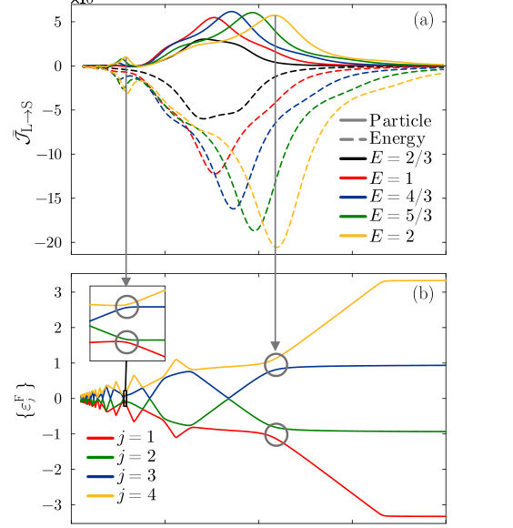
<figcaption class="paper-figure-caption"><b>Fig 3.</b> FIG. 3. Frequency dependence of transport. (a) Particle and energy currents ¯ J P,E L→S as a function of ω without bias con- sidering different values of E. Here µL,R = 1, TL,R = 10, N = 140, and D = 4. For E = 2, the peaks are located at ω ≈ {1.15, 4.35}. (b) Quasienergy spectrum of the stroboscopic time-independent effective Hamiltonian Heff = i ln(UF)/T for E = 2. The arrows signal the avoided crossings that occur at the resonance frequencies where the current is maximized.</figcaption>
</figure>
<figure class="paper-figure-card">
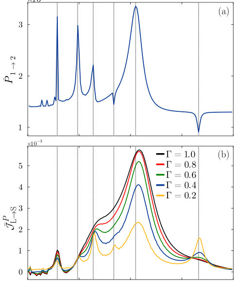
<figcaption class="paper-figure-caption"><b>Fig 4.</b> FIG. 4. Microscopic origin of transport enhancement for E = 2 and D = 4. (a) Cycle-averaged transition probability between states localized at physical sites 1 and 2, ¯P1→2, as a function of ω. (b) Particle current ¯ J P L→S as a function of ω for several values of the system–bath coupling Γ, with µL,R = 1, TL,R = 10, and N = 140. Vertical lines mark the resonances present in ¯P1→2, at ω ≈{1.15, 1.95, 2.55, 3.35, 4.2, 6.65}; each of these becomes a resolved peak in the current as Γ decreases. All are avoided crossings except ω ≈6.65, which instead arises from a single-photon transition between eigenstates of H0.</figcaption>
</figure>
<figure class="paper-figure-card">
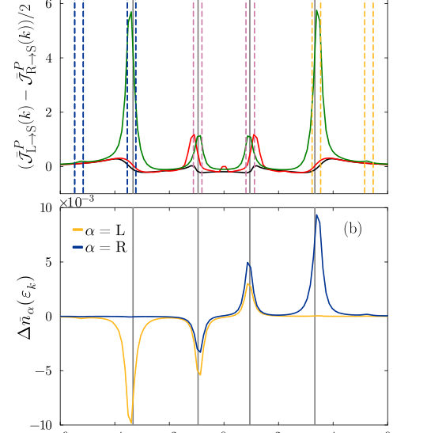
<figcaption class="paper-figure-caption"><b>Fig 5.</b> FIG. 5. Energy-resolved particle current and Floquet-driven redistribution of occupations. Vertical gray solid lines corre- spond to the eigenvalues of H0. For both figures, µL,R = 1, TL,R = 10, E = 2, D = 4, and N = 140. (a) Particle current J P resolved by energy modes. Dashed vertical lines {εF j }ω n in- dicate the four single-particle quasienergies that correspond to band n of the Floquet spectrum with driving frequency ω. (b) Cycle-averaged occupation deviation ∆nα(εk) for ω = 4.35 with respect to the undriven case.</figcaption>
</figure>
</div>

<p><strong>Summary.</strong> This paper details a mechanism to control quantum transport in driven fermionic systems by inducing particle and energy currents even without external bias. It quantifies this control using a rectification coefficient, identifying a unique 'bipolar rectification' regime. The findings demonstrate that interactions can significantly enhance this effect, offering a pathway for realizing quantum diodes in solid-state or cold atom platforms.</p>
<p><strong>Why it may be interesting.</strong> This work directly addresses non-equilibrium transport and rectification in periodically driven systems, which is a major focus area in modern AMO physics and quantum thermodynamics. The identification of bipolar rectification is a novel, controllable transport feature.</p>
<details>
<summary>Detailed structure</summary>
<p><strong>Main problem.</strong> The work aims to develop mechanisms to control particle and energy transport in correlated quantum systems, which is crucial for advancing quantum circuit technologies.</p>
<p><strong>Main result.</strong> The authors establish a mechanism for both particle and energy rectification, identifying a novel regime called bipolar rectification where current flows only in one direction regardless of the bias polarity.</p>
<p><strong>Method.</strong> The analysis quantifies transport using the rectification coefficient ($\mathcal{R}$) by comparing drive-induced and bias-induced currents, analyzing the system's response in non-equilibrium steady states.</p>
<p><strong>Model / system.</strong> The model is a fermionic system coupled to external baths, subjected to a tilted potential modulated locally by a time-periodic drive. The Hamiltonian includes terms for the system, the baths, and the coupling.</p>
<p><strong>Key observables.</strong> Rectification coefficient ($\mathcal{R}$), particle current ($J_P$), energy current ($J_E$), and the contrast coefficient ($C$).</p>
<p><strong>Important parameters / regimes.</strong> The driving frequency ($\omega$), the strength of interactions ($U$), and the presence/absence of chemical or thermal bias.</p>
<p><strong>Assumptions / limitations.</strong> The analysis is performed using a mesoscopic leads approach and is shown to operate even in the non-interacting regime, though interactions enhance the effect.</p>
<p><strong>Figures summary.</strong> Figure 1 illustrates the mechanism, showing how drive-induced currents peak at avoided crossings in the Floquet spectrum, and how the contrast coefficient ($C$) transitions between standard and bipolar rectification regimes.</p>
<p><strong>Paper structure.</strong> The paper first establishes the general mechanism for drive-induced currents in the presence of a tilt. It then analyzes the competition between drive-induced and bias-induced currents to define the rectification coefficient and identify the bipolar regime. Finally, it extends the analysis to include particle interactions, showing enhancement of the effect.</p>
</details>
<details>
<summary>Abstract</summary>
<p>Developing mechanisms to control transport in correlated quantum systems is essential for advancing quantum circuit technologies. In this work, we establish a rectification mechanism for both particle and energy flow in a fermionic system coupled to external baths, in the presence of a tilted potential modulated locally by a time-periodic drive. The drive generates particle and energy currents even in the absence of chemical or thermal bias between the baths. These drive-induced currents are enhanced at resonant frequencies at which avoided crossings occur in the Floquet quasienergy spectrum, reflecting the role of the Floquet states as intermediate channels for transport. Once a bias between the baths is introduced, the drive-induced current contribution can reinforce, compete with, or even cancel the bias-induced contribution. These effects enable rectification in the non-interacting regime, which we quantify via the rectification coefficient $\mathcal{R}$. This coefficient measures the asymmetry between transport up the tilt (forward bias) and down the tilt (reverse bias). In addition to standard rectification, where transport is reduced under reverse bias, we identify a regime of bipolar rectification, in which the current flows only up the tilt regardless of the bias polarity. At the boundary between standard and bipolar regimes, the system achieves perfect rectification, corresponding to complete suppression of the reverse-bias current. In the presence of interactions between particles, the parameter region that supports bipolar rectification is enlarged and $\mathcal{R}$ can be enhanced by many orders of magnitude. Our results establish a rectification mechanism for particle and energy transport that can be experimentally realized in condensed matter and cold atom systems.</p>
</details>
<p><sub><a href="#top">↑ back to top</a></sub></p>

<p><a id="paper-2610.21835"></a></p>
<h3 id="from-action-principle-to-stochastic-thermodynamics-of-elastic-and-viscous-active-matter"><a href="http://arxiv.org/abs/2610.21835v1">From Action Principle to Stochastic Thermodynamics of Elastic and Viscous Active Matter</a></h3>
<p><strong>Authors:</strong> Valentina Barletta, Michele Lupini, Ian D. Estabrook, Laeschkir Würthner, Isabella R. Graf, Caren Norden, Lamberto Rondoni, Anna Erzberger, Roman Belousov<br>
<strong>Type:</strong> theory · <strong>Category:</strong> statistical mechanics · <strong>PDF:</strong> <a href="https://arxiv.org/pdf/2610.21835v1">https://arxiv.org/pdf/2610.21835v1</a><br>
<strong>Analysis basis:</strong> full PDF text, analyzed in chunks
<strong>Topic relevance:</strong> <code>Keldysh / 2PI / non-Gaussian methods</code> <strong>3/5</strong> · <code>analog quantum simulation</code> <strong>2/5</strong> · <code>correlated / nonlocal dissipation</code> <strong>2/5</strong> · <code>driven-dissipative phase transition</code> <strong>2/5</strong> · <code>methods for driven-dissipative</code> <strong>2/5</strong> · <code>non-equilibrium universality</code> <strong>2/5</strong> · <code>Frenkel-Kontorova</code> <strong>1/5</strong> · <code>quantum measurements</code> <strong>1/5</strong></p>
<div class="figure-strip-hint">↔ Scroll figures horizontally</div>
<div class="paper-figures-scroll">
<figure class="paper-figure-card">
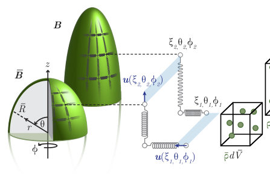
<figcaption class="paper-figure-caption"><b>Fig 1.</b> FIG. 1. Displacement vector of a body B with respect to a reference configuration ¯ B, which are isomorphic to a unit ball (ξ, θ, ϕ) (Appendix 3). For illustration, when the bound- ary surface ∂¯ B can be described in spherical coordinates (r, θ, ϕ) as ∂Br = ¯R(θ, ϕ) associated to the geometric cen- ter of the body, this isomorphism may be represented in a particularly simple form (Br, Bθ, Bϕ) =  ¯R(θ, ϕ)ξ, θ, ϕ  . Once the points of B and ¯ B are charted using (ξ, θ, ϕ), they can be transformed to any convenient reference frame, e.g. Cartesian. Then the displacement u(ξ, θ, ϕ) maps each point of the reference configuration ¯ B to the deformed body, B, B = ¯ B(ξ, θ, ϕ) + u(ξ, θ, ϕ). Each...</figcaption>
</figure>
<figure class="paper-figure-card">
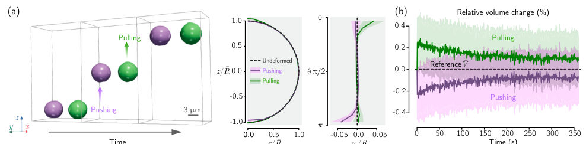
<figcaption class="paper-figure-caption"><b>Fig 2.</b> FIG. 2. Numerical simulations of nuclei subject to external point-source forces and spontaneous fluctuations. (a) Simulations, starting from the initial configuration of a perfect ball (Video 1), describe the evolution of nuclear shape for a pushing (purple) and pulling (green) force of magnitude zext applied respectively at the south or north pole. Snapshots at representative frames 66 s, 126 s, 180 s (left panel), and average shapes at 180 s over 100 realizations and the azimuthal angle show a dent at the bottom under the pushing protocol and a bulge at the top when pulled. (b) Nuclear volume dynamics across 100 realizations indicate their tendency to compress or extend relative to the...</figcaption>
</figure>
</div>

<p><strong>Summary.</strong> This paper develops a comprehensive theoretical framework to describe the dynamics of active and viscoelastic soft matter by extending the classical action principle to include stochastic and active forces. It unifies models ranging from lipid membranes to cell nuclei, allowing researchers to analyze complex biological mechanics using tools from statistical mechanics. This work is significant for understanding non-equilibrium processes in living matter.</p>
<p><strong>Why it may be interesting.</strong> Although focused on classical soft matter, the rigorous application of variational principles and the incorporation of non-equilibrium fluctuations (stochastic thermodynamics) provide powerful theoretical tools relevant to open quantum systems and quantum dissipation models.</p>
<details>
<summary>Detailed structure</summary>
<p><strong>Main problem.</strong> To derive a unifying framework for the stochastic thermo- and elastodynamics of active materials by connecting the classical principle of least action to fluctuating field variables.</p>
<p><strong>Main result.</strong> The framework successfully unifies descriptions for various soft matter systems, providing a systematic way to incorporate active forces and thermal fluctuations while maintaining thermodynamic consistency.</p>
<p><strong>Method.</strong> The derivation starts from the classical principle of least action and the Rayleighian formalism, coupling the local barycentric collective coordinate and streaming velocity as canonical conjugate pairs.</p>
<p><strong>Model / system.</strong> The model applies to elastic and viscous active matter, exemplified by the simulation of a boundary-driven deformation of an elastic cell nucleus. The dynamics are governed by extensions of the Euler-Lagrange equations incorporating active stresses and noise terms.</p>
<p><strong>Key observables.</strong> Displacement vector u, streaming velocity v, Hamiltonian H, and entropy production rate.</p>
<p><strong>Important parameters / regimes.</strong> Active stress parameters ($ar{\lambda}_t, ar{\mu}_t$), friction coefficients ($ar{\gamma}$), and the white-noise limit assumption.</p>
<p><strong>Assumptions / limitations.</strong> The approach assumes the applicability of the action principle to fluctuating field variables and utilizes the white-noise limit for the friction term in the stochastic equation.</p>
<p><strong>Figures summary.</strong> Figure 1 illustrates the displacement vector of a body relative to a reference configuration, parameterized by material coordinates.</p>
<p><strong>Paper structure.</strong> The paper builds from the classical action principle to derive stochastic elastodynamics, showing how the Lagrangian mechanics allows the application of statistical mechanics theorems to complex soft matter models.</p>
</details>
<details>
<summary>Abstract</summary>
<p>Motivated by the complex material properties of living matter, we derive a framework of stochastic thermo- and elastodynamics for active materials from the classical principle of least action and the Rayleighian formalism for external forces. Our approach couples the local barycentric collective coordinate and the streaming velocity as the canonical conjugate pair, which unifies various descriptions of elastic and viscous soft matter, including Helfrich theory for lipid membranes, linear and nonlinear elasticity of thin shells and deformable droplets, as well as hydrodynamics of active and passive fluids. The Lagrangian mechanics of collective field variables permits direct applications of the results and theorems from statistical mechanics to existing models of complex soft and living matter. To illustrate the potential applications of stochastic elastodynamics in biology, we derive and simulate a boundary-driven deformation model of an elastic cell nucleus in the presence of fluctuations.</p>
</details>
<p><sub><a href="#top">↑ back to top</a></sub></p>

<p><a id="paper-2610.21155"></a></p>
<h3 id="localized-states-of-the-non-hermitian-schrodinger-equation-with-a-complex-math210math-potential-from-efimov-states-to-bipolarons"><a href="http://arxiv.org/abs/2610.21155v1">Localized states of the non-Hermitian Schr{ö}dinger equation with a complex $1/r^{2}$ potential: from Efimov states to bipolarons</a></h3>
<p><strong>Authors:</strong> Kyoka Tsunoda, Kazuki Yamamoto, Shimpei Endo<br>
<strong>Type:</strong> theory · <strong>Category:</strong> quantum gases · <strong>PDF:</strong> <a href="https://arxiv.org/pdf/2610.21155v1">https://arxiv.org/pdf/2610.21155v1</a><br>
<strong>Analysis basis:</strong> full PDF text, analyzed in chunks
<strong>Topic relevance:</strong> <code>correlated / nonlocal dissipation</code> <strong>3/5</strong> · <code>driven-dissipative phase transition</code> <strong>3/5</strong> · <code>Keldysh / 2PI / non-Gaussian methods</code> <strong>2/5</strong> · <code>analog quantum simulation</code> <strong>2/5</strong> · <code>methods for driven-dissipative</code> <strong>2/5</strong> · <code>non-equilibrium universality</code> <strong>2/5</strong> · <code>quantum measurements</code> <strong>1/5</strong></p>
<div class="figure-strip-hint">↔ Scroll figures horizontally</div>
<div class="paper-figures-scroll">
<figure class="paper-figure-card">
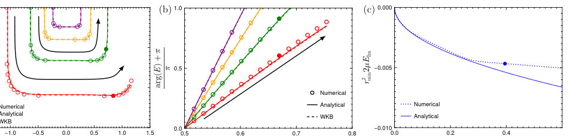
<figcaption class="paper-figure-caption"><b>Fig 1.</b> FIG. 1. (a) Energies of the ground (n = 1, red), first excited (n = 2, green), second excited (n = 3, yellow), and third excited (n = 4, purple) localized states for the complex potential with |s| ≈3.163 fixed. arg s is varied from π/2, corresponding to the Efimov state, to π −1</figcaption>
</figure>
<figure class="paper-figure-card">
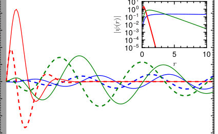
<figcaption class="paper-figure-caption"><b>Fig 2.</b> FIG. 2. Eigenfunctions obtained numerically from Eq. (8), corresponding to the filled circles in Fig. 1 at |s| ≈3.163 and arg s ≈0.669π (i.e., s2 −1/4 ≈−5.107 −8.745i). The red and green curves are the localized ground and first ex- cited states, and the blue curve is the continuum state at E ≈39.499 −0.467i. Main panel: real (solid) and imaginary (dashed) parts. Grey area: region r &lt; rmin excluded by the boundary condition. Inset: absolute value |ψ(r)|.</figcaption>
</figure>
<figure class="paper-figure-card">
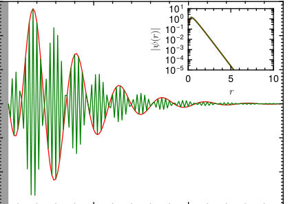
<figcaption class="paper-figure-caption"><b>Fig 3.</b> FIG. 3. (a) Energies of the localized states near the end point of Fig. 1(a), where the potential becomes purely imaginary, s2 −1/4 = −10.0i, obtained with the same parameters and symbols. The blue dotted curve is the continuum state for the purely imaginary potential. (b) Eigenfunctions of the lo- calized ground (red) and first excited (green) states for the purely imaginary potential, corresponding to the terminating filled circles in (a), respectively. Main panel: real part. Inset: absolute value |ψ(r)|.</figcaption>
</figure>
<figure class="paper-figure-card">
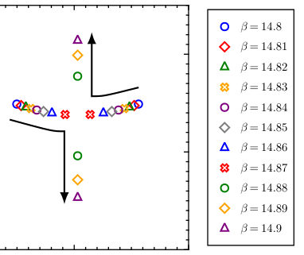
<figcaption class="paper-figure-caption"><b>Fig 4.</b> FIG. 4. Trajectories of the complex energy eigenvalues of the two localized states for a purely imaginary potential s2−1/4 = −iβ. β is increased (a) from 7.0 to 16.0 in steps of 0.5 (from 14.5 to 15.5 near the exceptional point, in steps of 0.1), and (b) from 14.8 to 14.9 in steps of 0.01 (rmin = 0.1, rmax = 100, N = 1500). Arrows indicate the direction of increasing β.</figcaption>
</figure>
<figure class="paper-figure-card">
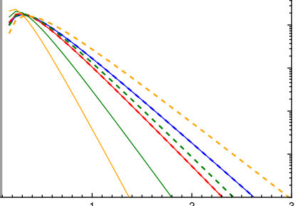
<figcaption class="paper-figure-caption"><b>Fig 5.</b> FIG. 5. Eigenfunctions of the localized states for various strengths β of purely imaginary potential (rmin = 0.1, rmax = 100, N = 1500). For β &lt; β(ep), β = 13.0 (blue) and 14.0 (red), the two localized states (solid and dashed) have the same absolute values, whereas for β &gt; β(ep), β = 15.0 (green) and 16.0 (yellow), they turn into strongly (solid) and weakly (dashed) localized states.</figcaption>
</figure>
</div>

<p><strong>Summary.</strong> This paper analyzes localized states in a non-Hermitian Schrödinger equation featuring a complex $1/r^2$ potential, modeling interactions between heavy polarons. It demonstrates a smooth transition from known Efimov bound states to a novel bipolaron state as the potential becomes purely imaginary. The study highlights the role of non-Hermiticity in generating unique quantum phenomena like exceptional points.</p>
<p><strong>Why it may be interesting.</strong> This work directly connects the physics of few-body resonances (Efimov states, relevant in quantum gases) with non-Hermitian physics (dissipation, exceptional points), providing a unified theoretical framework for open quantum systems.</p>
<details>
<summary>Detailed structure</summary>
<p><strong>Main problem.</strong> The study investigates localized states governed by the non-Hermitian Schrödinger equation featuring a complex $1/r^2$ potential.</p>
<p><strong>Main result.</strong> The analysis shows that Efimov bound states smoothly connect to a bipolaron state as the potential becomes purely imaginary, and the system exhibits exceptional points when discretized.</p>
<p><strong>Method.</strong> The authors employ analytical solutions, comparison with WKB approximations, and numerical methods like the finite-difference technique to solve the non-Hermitian equation.</p>
<p><strong>Model / system.</strong> The model is the non-Hermitian Schrödinger equation with a complex $1/r^2$ potential, relevant for describing two heavy polarons in a dissipative medium.</p>
<p><strong>Key observables.</strong> Complex energy eigenvalues ($E$), the argument of the complex energies, and the existence/disappearance of localized states.</p>
<p><strong>Important parameters / regimes.</strong> The complex potential parameter $s^2$, the imaginary part of the potential ($ ext{Im}[s^2]$), and the boundary condition parameter $r_{	ext{min}}$.</p>
<p><strong>Assumptions / limitations.</strong> The analysis assumes the imaginary potential tail dominates the long-range dynamics, and the finite-difference method reveals a symmetry leading to exceptional points.</p>
<p><strong>Figures summary.</strong> Figure 1 illustrates the evolution of localized state energies and their arguments as the potential parameter $\arg(s)$ changes from the Efimov regime to the purely imaginary potential limit. Figure 2 shows eigenfunction plots.</p>
<p><strong>Paper structure.</strong> The paper progresses by first establishing the physical context bridging Efimov states and bipolarons, deriving analytical and numerical solutions for the complex potential, and then detailing the evolution of the energy spectrum as the potential parameter is varied.</p>
</details>
<details>
<summary>Abstract</summary>
<p>We study the non-Hermitian Schrödinger equation with a complex $1/r^{2}$ potential, which bridges Hermitian few-body and non-Hermitian many-body physics: a real attractive potential describes Efimov bound states, whereas a purely imaginary one describes the medium-induced interaction between two heavy polarons at large separations. We solve this equation analytically, obtaining both the localized and continuum states, and compare the solutions with numerical and WKB results. As the imaginary part of the potential is increased, the energies of the Efimov bound states acquire imaginary parts and rotate counterclockwise in the complex plane. On approaching the purely imaginary potential, the excited states disappear sequentially, while the Efimov ground state is smoothly connected to a bipolaron state localized at short distance. Such a bipolaron is localized solely by the medium-induced imaginary interaction, without any attractive real potential. Solving the equation by finite differences, we find that each bipolaron state is necessarily accompanied by another localized state that oscillates on the scale of the mesh size and hence has no counterpart in the continuum limit. Each such pair coalesces at an exceptional point as the strength of the purely imaginary potential is varied, whereas the coalescence is lifted once a finite real part is introduced. We show that this behavior originates from a symmetry of the discretized Schrödinger equation that holds for any purely imaginary potential.</p>
</details>
<p><sub><a href="#top">↑ back to top</a></sub></p>

<p><a id="paper-2610.21962"></a></p>
<h3 id="sluggish-random-walks-with-resetting-nonequilibrium-aspects"><a href="http://arxiv.org/abs/2610.21962v1">Sluggish random walks with resetting: nonequilibrium aspects</a></h3>
<p><strong>Authors:</strong> Theophilus Dwamena Frimpong, Léa Bresque, Edgar Roldán<br>
<strong>Type:</strong> theory · <strong>Category:</strong> statistical mechanics · <strong>PDF:</strong> <a href="https://arxiv.org/pdf/2610.21962v1">https://arxiv.org/pdf/2610.21962v1</a><br>
<strong>Analysis basis:</strong> full PDF text, analyzed in chunks
<strong>Topic relevance:</strong> <code>driven-dissipative phase transition</code> <strong>3/5</strong> · <code>non-equilibrium universality</code> <strong>3/5</strong> · <code>Keldysh / 2PI / non-Gaussian methods</code> <strong>2/5</strong> · <code>methods for driven-dissipative</code> <strong>2/5</strong> · <code>quantum measurements</code> <strong>2/5</strong> · <code>analog quantum simulation</code> <strong>1/5</strong> · <code>correlated / nonlocal dissipation</code> <strong>1/5</strong> · <code>scars &amp; prethermalization</code> <strong>1/5</strong></p>
<div class="figure-strip-hint">↔ Scroll figures horizontally</div>
<div class="paper-figures-scroll">
<figure class="paper-figure-card">
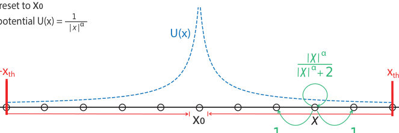
<figcaption class="paper-figure-caption"><b>Fig 1.</b> Figure 1: Schematic illustration of sluggish random walkers with resetting on a discrete one- dimensional lattice with homogeneous spacing. (A) Sluggish random walker with Poissonian resetting. At each position x, the walker resets to the origin with probability pr (red), or, with probability 1 −pr, hops left/right with probability 1/(|x|α + 2) or stays at x with probability |x|α/(|x|α + 2). The dashed curve shows the repulsive potential U(x) = 1/|x|α. (B) Sluggish random walker with threshold resetting. At each position x, the walker hops or stays with sluggish probabilities (green arrows). Upon reaching the thresholds ±xth (red walls), the walker is deterministically reset to the origin...</figcaption>
</figure>
<figure class="paper-figure-card">
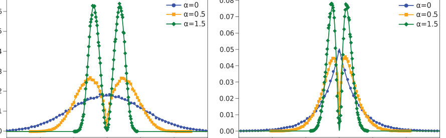
<figcaption class="paper-figure-caption"><b>Fig 2.</b> Figure 2: Steady-state probability density of sluggish random walks at the final simulation time, for reset rates r = 0 (left panel) and r = 0.01 (right panel) and sluggishness parameters α = 0, 0.5, and 1.5 (see legend). Symbols are obtained from numerical simulations, and lines are given by the analytical results (21). Simulations start from x0 = 0 at t = 0 and N = 106 independent runs are executed. The observation time is T = 250 for r = 0 and T = 15/r = 1500 for r = 0.01, long enough for the walkers to be stationary (e−rT ≃3 × 10−7</figcaption>
</figure>
<figure class="paper-figure-card">
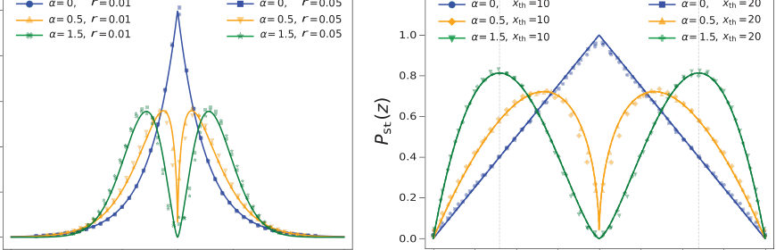
<figcaption class="paper-figure-caption"><b>Fig 3.</b> Figure 3: Scaled steady-state probability density of sluggish random walks with resetting. Symbols are obtained from numerical simulations, and lines are given by the corresponding analytical result. Simulations start from x0 = 0 and N = 106 independent realisations are used. Final positions are taken at T = 15/r in (A) and at T = 10⟨τ⟩in (B), with ⟨τ⟩given by Eq. (26), so that the density is stationary. (A) Poissonian resetting, Pst(z) (23), plotted as a function of the rescaled position z = x r1/(α+2), for sluggishness parameters α ∈{0, 0.5, 1.5} and reset rates r ∈{0.01, 0.05} (see legend). The collapse of simulations at different reset rates r onto a single curve for each α confirms the...</figcaption>
</figure>
<figure class="paper-figure-card">
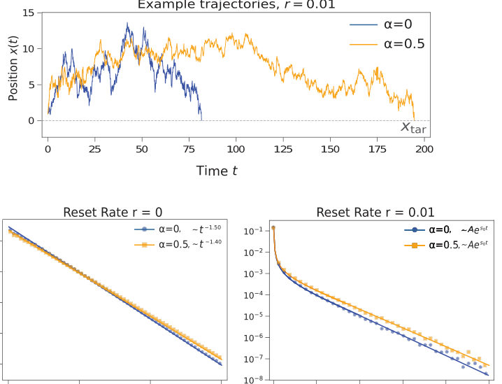
<figcaption class="paper-figure-caption"><b>Fig 4.</b> Figure 4: (A) Example trajectories x(t) starting at x0 = 1 under Poissonian resetting with r = 0.01, for α = 0 (random walk with resetting) and α = 0.5 (sluggish walk with resetting), illustrating the first-passage event to the target xtar = 0 (dashed line). (B) First-passage time density Fr(x0, t) of sluggish random walks starting at x0 = 1 with an absorbing target at the origin, for reset rates r = 0 (left panel) and r = 0.01 (right panel) and sluggishness parameters α ∈{0, 0.5} (see legend). Symbols are obtained from N = 5 × 106 independent simulations evolved to T = 1000. For r = 0, the lines show the analytical power-law tail F0 ∼t−(1+µ) (33). Lines are the exact first-passage...</figcaption>
</figure>
<figure class="paper-figure-card">
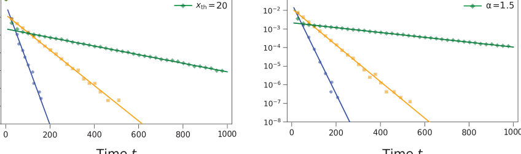
<figcaption class="paper-figure-caption"><b>Fig 5.</b> Figure 5: First-passage time density Fth(x0, t) of sluggish random walks with threshold resetting, starting at x0 = 1 with an absorbing target at the origin, for fixed α = 0.5 with thresholds xth ∈{5, 10, 20} (left panel) and fixed xth = 10 with sluggishness parameters α ∈{0, 0.5, 1.5} (right panel). Symbols are obtained from N = 106 independent simulations evolved to T = 1000, with every fifth data point in the histograms shown here. Solid lines are the exact densities (numerical inversion of (55)) and dashed lines the exponential tail Athestht (54), with sth and Ath given analytically, confirming the finite MFPT guaranteed by Eq. (51). Smaller thresholds and smaller sluggishness...</figcaption>
</figure>
</div>

<p><strong>Summary.</strong> This paper provides rigorous analytical solutions for sluggish random walks subjected to stochastic resetting. It analyzes two types of resetting—Poissonian and threshold-based—deriving exact expressions for key observables like first-passage times and stationary distributions. The work is significant for understanding how non-Markovian or non-equilibrium processes modify fundamental transport phenomena in complex systems.</p>
<p><strong>Why it may be interesting.</strong> The study of non-equilibrium dynamics, especially how external forcing (resetting) modifies transport properties like diffusion and relaxation times, is highly relevant to open quantum systems and quantum measurement theory.</p>
<details>
<summary>Detailed structure</summary>
<p><strong>Main problem.</strong> The paper investigates the non-equilibrium dynamics of sluggish random walks subjected to two distinct stochastic resetting protocols: Poissonian and threshold-based.</p>
<p><strong>Main result.</strong> Exact analytical expressions are derived for the first-passage time distribution and stationary states under both resetting types, revealing how sluggishness modifies critical exponents and cost behaviors.</p>
<p><strong>Method.</strong> The authors employ analytical derivations, solving modified Fokker-Planck equations, utilizing Laplace transforms, and applying renewal theory to characterize the system's time evolution.</p>
<p><strong>Model / system.</strong> The model is a sluggish random walk in one dimension, described by a position-dependent diffusion coefficient $D(x) \propto |x|^{-\alpha}$. The dynamics are perturbed by either Poissonian resetting at rate $r$ or resetting upon reaching a threshold $x_{th}$.</p>
<p><strong>Key observables.</strong> Fixed-time probability distribution, Laplace transform of first-passage time, occupation-time statistics (Lamperti/Gaussian), and the cost rate associated with resetting.</p>
<p><strong>Important parameters / regimes.</strong> Sluggishness parameter ($\alpha$), resetting rate ($r$), and threshold position ($x_{th}$).</p>
<p><strong>Assumptions / limitations.</strong> The analysis relies on the continuum limit approximation for the underlying discrete Markov chain dynamics.</p>
<p><strong>Figures summary.</strong> Figures illustrate the dynamics, showing the cusp at $x=0$ for $\alpha > 0$ and the bimodal nature of the stationary distribution for $\alpha > 0$.</p>
<p><strong>Paper structure.</strong> The paper systematically derives the governing equations for the sluggish walk, then analyzes the stationary states and first-passage times for Poissonian resetting, followed by an analysis using renewal theory for threshold resetting, concluding with a detailed comparison of the cost rate behavior in both limits.</p>
</details>
<details>
<summary>Abstract</summary>
<p>We derive exact analytical expressions for the fixed-time probability distribution and the Laplace transform of the distribution of the first-passage time to reach a target for a sluggish random walk in one dimension subject to two different types of stochastic resetting: stochastic resetting at random Poisson-distributed times, and resetting implemented whenever a position threshold is reached. The optimal resetting rate that minimises the mean first-passage time is obtained as a function of the sluggishness parameter, while under threshold resetting the mean first-passage time to the origin is found to increase monotonically with the threshold. We also characterise the occupation-time statistics, retrieving a Lamperti-type distribution under free dynamics and under Poissonian resetting at rate for short observation times, a Gaussian distribution centred at half for long observation times, and a distinct deterministic limit under threshold resetting. To further characterise nonequilibrium aspects of resetting, we evaluate the distribution and mean of the cost incurred per reset under Poissonian resetting, and the cost rate under threshold resetting, for different (linear, power-law, exponential) cost functions, and find the same critical behaviour of the cost rate in the limits of a vanishing resetting rate and an infinite threshold, respectively. Numerical simulations validate with excellent accuracy our analytical formulae.</p>
</details>
<p><sub><a href="#top">↑ back to top</a></sub></p>

<p><a id="paper-2610.21861"></a></p>
<h3 id="diffusion-induced-stabilization-of-nonreciprocal-wealth-dynamics"><a href="http://arxiv.org/abs/2610.21861v1">Diffusion-Induced Stabilization of Nonreciprocal Wealth Dynamics</a></h3>
<p><strong>Authors:</strong> Pierre Bousseyroux, Gilles Zérah, Michael Benzaquen<br>
<strong>Type:</strong> theory · <strong>Category:</strong> statistical mechanics · <strong>PDF:</strong> <a href="https://arxiv.org/pdf/2610.21861v1">https://arxiv.org/pdf/2610.21861v1</a><br>
<strong>Analysis basis:</strong> full PDF text, analyzed in chunks
<strong>Topic relevance:</strong> <code>driven-dissipative phase transition</code> <strong>3/5</strong> · <code>non-equilibrium universality</code> <strong>3/5</strong> · <code>Keldysh / 2PI / non-Gaussian methods</code> <strong>2/5</strong> · <code>correlated / nonlocal dissipation</code> <strong>2/5</strong> · <code>methods for driven-dissipative</code> <strong>2/5</strong> · <code>analog quantum simulation</code> <strong>1/5</strong> · <code>quantum measurements</code> <strong>1/5</strong></p>
<div class="figure-strip-hint">↔ Scroll figures horizontally</div>
<div class="paper-figures-scroll">
<figure class="paper-figure-card">
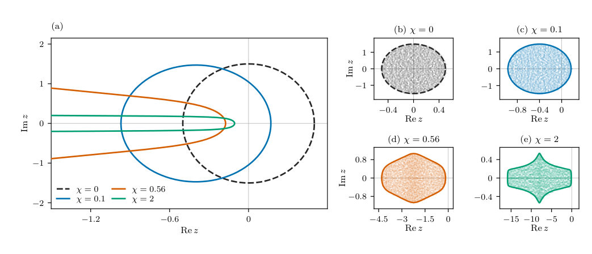
<figcaption class="paper-figure-caption"><b>Fig 1.</b> FIG. 1. (a) Boundary of the limiting spectrum of χ∆+ b Xτ at τ = −0.5, for χ = 0, 0.1, 0.56, and 2, computed from Eqs. (9) and (10). The horizontal axis starts at −1.5. The dashed curve is the boundary of the elliptic law at χ = 0, Eq. (11). (b)–(e) Eigenvalues on 1⊥for the same realization of b Xτ, with L = 50 (N = 2500) and τ = −0.5, at the four diffusion strengths shown in (a), respectively. The value χ ≃0.56 minimizes the right spectral edge at τ = −0.5. The curve in each panel is the corresponding limiting boundary from (a).</figcaption>
</figure>
<figure class="paper-figure-card">
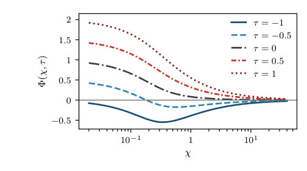
<figcaption class="paper-figure-caption"><b>Fig 2.</b> FIG. 2. Right edge Φ(χ, τ) of the limiting spectrum, Eq. (6), as a function of the relative diffusion strength χ, Eq. (5), for the values of τ indicated in the legend. Curves are com- puted from Eqs. (12) and (13). For τ ≥0, the edge decreases monotonically and remains positive. For τ &lt; 0, it reaches a global minimum at finite χ and approaches zero from below as χ →∞. At fixed χ, ∂τΦ = G(χ).</figcaption>
</figure>
<figure class="paper-figure-card">
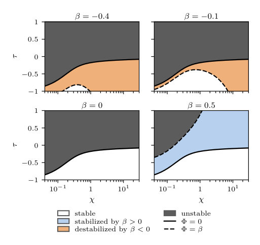
<figcaption class="paper-figure-caption"><b>Fig 3.</b> FIG. 3. Linear stability of equal wealth shares in the (χ, τ) plane for β = −0.4, −0.1, 0, and 0.5 (top left, top right, bot- tom left, and bottom right, respectively), where β = γ/σ. The solid curve marks the stability threshold without redis- tribution (Φ = 0); the dashed curve marks the threshold at the indicated β (Φ = β). The curves coincide when β = 0. Colors compare stability at the indicated β with the reference case of no redistribution: white, stable in both cases; dark gray, unstable in both cases; light blue, unstable without re- distribution but stabilized by positive redistribution (β &gt; 0); light orange, stable without redistribution but destabilized by wealth concentration (β...</figcaption>
</figure>
</div>

<p><strong>Summary.</strong> This work analyzes the stability of equal wealth distribution in a spatially extended economic model incorporating nonreciprocal interactions. By analyzing the spectral properties of the linearized dynamics, the authors show that negative correlations can stabilize the system even without global redistribution. The stability margin is found to be nonmonotonic with respect to diffusion strength, highlighting a competition between spatial smoothing and correlation effects.</p>
<p><strong>Why it may be interesting.</strong> The mathematical framework of analyzing spectral edges and stability boundaries in non-equilibrium, interacting many-body systems is highly relevant to open quantum systems and non-equilibrium statistical mechanics.</p>
<details>
<summary>Detailed structure</summary>
<p><strong>Main problem.</strong> The paper studies the stability of equal wealth shares in a spatial model incorporating local sharing, global redistribution, and random nonreciprocal interactions.</p>
<p><strong>Main result.</strong> Negative correlations in interactions allow for stability without external redistribution, and this stability exhibits a nonmonotonic dependence on diffusion strength.</p>
<p><strong>Method.</strong> The analysis linearizes the wealth dynamics around the equal share state and determines stability by analyzing the right edge of the limiting spectrum, $\Lambda$.</p>
<p><strong>Model / system.</strong> The model is a spatial wealth dynamics system on a 2D square lattice, governed by an equation involving local sharing ($x$), global redistribution ($\gamma$), and nonreciprocal interactions ($X_{ij}$).</p>
<p><strong>Key observables.</strong> The limiting spectral support $\Lambda$ (or $\Phi(\chi, 	au)$), which determines stability ($\Lambda < 0$ for stability).</p>
<p><strong>Important parameters / regimes.</strong> Diffusion strength ($\chi$), nonreciprocal correlation ($  au$), and the redistribution strength ($eta = \gamma/\sigma$).</p>
<p><strong>Assumptions / limitations.</strong> The analysis is performed in the infinite-system limit, and specific results rely on the geometry of the lattice (e.g., square lattice).</p>
<p><strong>Figures summary.</strong> Figures illustrate the boundary of the limiting spectrum $\chi\Delta + b_{X	au}$ for various diffusion strengths and compare this boundary to actual eigenvalues, showing the nonmonotonic behavior for negative correlations.</p>
<p><strong>Paper structure.</strong> The paper develops the spectral boundary $\Phi(\chi, 	au)$ using elliptic integrals for the square lattice, analyzes its dependence on $\chi$ and $ au$, and derives conditions for stability based on the comparison between $\Phi$ and the redistribution parameter $eta$.</p>
</details>
<details>
<summary>Abstract</summary>
<p>We study the stability of equal wealth shares in a spatial model combining local sharing, global redistribution, and random nonreciprocal interactions. On a two-dimensional square lattice in the infinite-system limit, the effect of local sharing depends on whether the influence of one site on another tends to have the same or opposite sign as the reverse influence. When these influences are nonnegatively correlated, diffusion reduces the redistribution required for stability, but a positive rate remains necessary. Negative correlations instead allow stability without redistribution, with the largest stability margin at finite diffusion and a return toward marginal stability at strong diffusion. This nonmonotonicity reflects a competition between spatial smoothing and the weakening of the stabilizing contribution of reciprocal anticorrelations. Equal shares can even remain stable under wealth-concentrating transfers, but only within an intermediate range of diffusion strengths.</p>
</details>
<p><sub><a href="#top">↑ back to top</a></sub></p>

<p><a id="paper-2610.22038"></a></p>
<h3 id="partial-localization-and-multifractality-in-heterogeneous-population-growth-with-resetting"><a href="http://arxiv.org/abs/2610.22038v1">Partial Localization and Multifractality in Heterogeneous Population Growth with Resetting</a></h3>
<p><strong>Authors:</strong> Maximilien Bernard, Giuseppe Del Vecchio Del Vecchio, Jean-Philippe Bouchaud, Pierre Le Doussal<br>
<strong>Type:</strong> theory · <strong>Category:</strong> statistical mechanics · <strong>PDF:</strong> <a href="https://arxiv.org/pdf/2610.22038v1">https://arxiv.org/pdf/2610.22038v1</a><br>
<strong>Analysis basis:</strong> full PDF text, analyzed in chunks
<strong>Topic relevance:</strong> <code>driven-dissipative phase transition</code> <strong>3/5</strong> · <code>non-equilibrium universality</code> <strong>3/5</strong> · <code>Keldysh / 2PI / non-Gaussian methods</code> <strong>2/5</strong> · <code>methods for driven-dissipative</code> <strong>2/5</strong> · <code>analog quantum simulation</code> <strong>1/5</strong> · <code>correlated / nonlocal dissipation</code> <strong>1/5</strong> · <code>quantum measurements</code> <strong>1/5</strong> · <code>scars &amp; prethermalization</code> <strong>1/5</strong></p>
<div class="figure-strip-hint">↔ Scroll figures horizontally</div>
<div class="paper-figures-scroll">
<figure class="paper-figure-card">
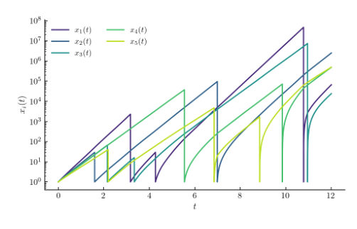
<figcaption class="paper-figure-caption"><b>Fig 1.</b> FIG. 1. Example trajectories x1(t), . . . , x5(t) for Gaussian heterogeneous growth rates, φ = 0.2, and r = 0.2. Resetting interrupts growth episodes through sudden downward jumps.</figcaption>
</figure>
<figure class="paper-figure-card">
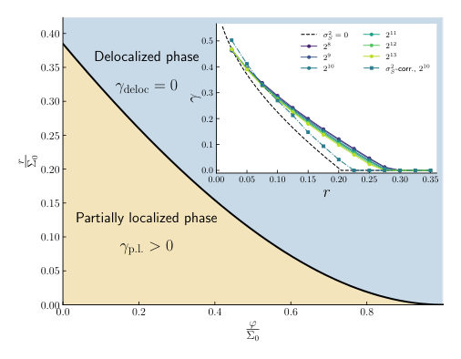
<figcaption class="paper-figure-caption"><b>Fig 2.</b> FIG. 2. Main: Phase diagram in the (r/Σ0, φ/Σ0) plane for Gaussian mi. The transition follows from Eq. (31), γpl = γdeloc. Inset: Numerical estimates γest(N, r) for φ = 0.3, Σ0 = 1, m0 = 0, compared with the N = ∞prediction (20),(29),(31) (black dashed). Finite-size effects are of order 1/ ln N but their direction is consistent. Square points include the fluctuation term σ2 S, estimated numerically.</figcaption>
</figure>
<figure class="paper-figure-card">

<figcaption class="paper-figure-caption"><b>Fig 3.</b> FIG. 3. Main: Distribution of the fractions pi for three sites in the partially localized phase, φ = 0.2, r = 0.1, Σ0 = 1, N = 215, illustrating µi &lt; 0, µi &gt; 1, and 0 &lt; µi &lt; 1. The self- averaging exponent µi = r/(mi −φ −γ) is plotted (dotted) when µi &gt; 0; γ is estimated from (3). Inset: Multifractal exponent θ(q) of Yq = P</figcaption>
</figure>
<figure class="paper-figure-card">

<figcaption class="paper-figure-caption"><b>Fig 4.</b> FIG. 4. Left: Rescaled stationary distribution of Ls ≡ln ¯x(t + s) −ln ¯x(t) for φ = 0.3, r = 0.125,m0 = 0, Σ0 = 1 (partially localized phase) and N = 211. We observe that it converges to a Gaussian at large s. Inset: Variance of Ls for several s with a linear fit, confirming the diffusive fluctuations in the partially localized phase (r = 0.05, 0.15), while the fluctuations vanish in the delocalized phase (r = 0.3). The slope yields the empirical value of σ2 S. Right: γ(N) for φ = 0.3, r = 0.125, Σ0 = 1 together with a fit of the form γ∞+ b/ ln N. The estimated γ∞≃0.183 is slightly larger than the predicted value γp.l. ≃0.164. (Note that the saddle-point estimate seems to suggest the...</figcaption>
</figure>
<figure class="paper-figure-card">

<figcaption class="paper-figure-caption"><b>Fig 5.</b> FIG. 5. Predicted phase diagram in the (r/m&gt;, φ/m&gt;) plane for mi distributed according to Eq.(S20). Left: ψ = 0.5, the system is always delocalized, although there are two phases, with and without growth. Right: ψ = 1.5, for small redistribution, there is an additional marginal partially localized phase</figcaption>
</figure>
</div>

<p><strong>Summary.</strong> This paper models population growth in a heterogeneous environment subject to random resets. It identifies distinct dynamical phases—delocalized, partially localized, and localized—each characterized by a specific growth rate. The work is significant for establishing a general framework to determine the system's true long-term growth rate by comparing estimates derived from different physical limits.</p>
<p><strong>Why it may be interesting.</strong> The concepts of localization, multifractality, and non-equilibrium steady states are central to understanding complex many-body systems, providing theoretical tools applicable to open quantum systems where dissipation and noise drive the dynamics.</p>
<details>
<summary>Detailed structure</summary>
<p><strong>Main problem.</strong> The study investigates the dynamics of heterogeneous multiplicative growth in a system subjected to mean-field redistribution and stochastic local resetting events.</p>
<p><strong>Main result.</strong> The system exhibits a transition between a delocalized phase and a partially localized phase, with the overall growth rate determined by the maximum of rates calculated in different regimes.</p>
<p><strong>Method.</strong> The analysis employs self-averaging approximations, saddle point analysis, and the derivation of stationary distributions to characterize the system's long-term behavior.</p>
<p><strong>Model / system.</strong> The model describes $N$ sites with populations $x_i(t)$ and quenched growth rates $m_i$. Dynamics are governed by growth equations coupled with mean-field redistribution and Poissonian local resetting.</p>
<p><strong>Key observables.</strong> System growth rate ($\gamma$), site population fractions ($p_i$), and the multifractal spectrum ($    heta(q)$).</p>
<p><strong>Important parameters / regimes.</strong> Resetting rate ($r$), redistribution rate ($\varphi$), and the heterogeneity of growth rates ($m_i$).</p>
<p><strong>Assumptions / limitations.</strong> The analysis heavily relies on the self-averaging approximation, which simplifies the dynamics by neglecting fluctuations in the total population.</p>
<p><strong>Figures summary.</strong> Figures illustrate phase diagrams in parameter spaces (e.g., $(r/\Sigma_0, \phi/\Sigma_0)$) showing the transition lines between delocalized, partially localized, and localized regimes.</p>
<p><strong>Paper structure.</strong> The paper systematically derives growth rates for different phases (delocalized, partially localized, localized) by solving the underlying stochastic differential equations under various approximations, culminating in a determination of the true physical growth rate as the maximum of these estimates.</p>
</details>
<details>
<summary>Abstract</summary>
<p>We study a model of heterogeneous multiplicative growth with mean-field redistribution and independent local stochastic resetting. The model describes populations or wealth distributed over sites with quenched growth-rate heterogeneity, while resets represent random local extinction or bankruptcy events. At large redistribution or resetting rate, we find a delocalized phase and we compute the growth rate as well as the stationary distribution of the population of a given site. We show that reset-free growth episodes generate power-law stationary tails with site-dependent exponents. For weak resetting and redistribution, favorable sites can undergo long reset-free episodes and localize. This produces a partially localized phase, in which a finite fraction of the total population is carried by a small set of sites whose identity changes on an $O(1)$ time scale within a subextensive pool of $N^{u^\star}$ favorable candidates, with $0<u^\star<1$. We derive the corresponding growth rate from a saddle point analysis, and show that the averaged stationary fractions display multifractal behavior.</p>
</details>
<p><sub><a href="#top">↑ back to top</a></sub></p>

<p><a id="paper-2610.21609"></a></p>
<h3 id="fast-parallel-three-dimensional-rearrangement-of-atom-arrays-using-superpositions-of-elementary-holograms"><a href="http://arxiv.org/abs/2610.21609v1">Fast, parallel, three-dimensional rearrangement of atom arrays using superpositions of elementary holograms</a></h3>
<p><strong>Authors:</strong> D. J. Hoare, P. Dunniece, J. Rodewald, K. K. Voges, M. R. Tarbutt<br>
<strong>Type:</strong> experiment · <strong>Category:</strong> other · <strong>PDF:</strong> <a href="https://arxiv.org/pdf/2610.21609v1">https://arxiv.org/pdf/2610.21609v1</a><br>
<strong>Analysis basis:</strong> full PDF text, analyzed in chunks
<strong>Topic relevance:</strong> <code>QC/QI experiment</code> <strong>3/5</strong> · <code>analog quantum simulation</code> <strong>3/5</strong> · <code>interference shaping light</code> <strong>2/5</strong> · <code>methods for driven-dissipative</code> <strong>2/5</strong> · <code>Rydberg arrays</code> <strong>1/5</strong> · <code>quantum measurements</code> <strong>1/5</strong> · <code>quantum optics experiment</code> <strong>1/5</strong></p>
<div class="figure-strip-hint">↔ Scroll figures horizontally</div>
<div class="paper-figures-scroll">
<figure class="paper-figure-card">

<figcaption class="paper-figure-caption"><b>Fig 1.</b> FIG. 1. Schematic of the I-SEH rearrangement protocol for a stochastically filled 20 × 20 array rearranged into a defect-free 14 × 14 array. (a) Stochastic loading. Filled circles mark occupied sites and open circles empty sites. (b) Occupied sites are assigned to the target sites (shaded region) using the Jonker-Volgenant(JV) linear assignment algorithm. Unassigned and unoccupied traps are extinguished by setting their weights to zero. (c) The assigned traps are transported in parallel along linear trajectories over K frames, with K set by the maximum step size per frame. (d) The final defect-free array. (e) Hologram computation. Weights wn and phases θn of the initial and final arrays are...</figcaption>
</figure>
<figure class="paper-figure-card">

<figcaption class="paper-figure-caption"><b>Fig 2.</b> Figure 1 shows the interpolated superposition of el- ementary holograms (I-SEH) rearrangement protocol, which proceeds as follows:</figcaption>
</figure>
<figure class="paper-figure-card">

<figcaption class="paper-figure-caption"><b>Fig 3.</b> FIG. 2. Experimental characterization of the rearrangement protocol with zero equalization iterations per step. (a) Single-shot fluorescence image of a stochastically loaded 16 × 16 array and (b) the corresponding distribution of photon counts, giving a mean filling fraction ηi = 55.26(16)%. (c) Single-shot fluorescence image of the 10 × 10 target array after rearrangement and (d) the corresponding count distribution, giving ηf = 96.33(9)%. The residual low-count peak in (d) corresponds to target sites left unfilled. (e) Rearrangement efficiency as a function of the maximum per-frame step size δ. Error bars are smaller than the points. The efficiency is roughly constant for δ ≲1.0 µm and...</figcaption>
</figure>
<figure class="paper-figure-card">

<figcaption class="paper-figure-caption"><b>Fig 4.</b> FIG. 3. Transport out of the focal plane. (a)–(c) Averaged fluorescence images of atoms in a 9×9 array with site spacing 5 µm, with one checkerboard sublattice displaced along the optical axis by ∆z = 0, 5 and 10 µm, respectively. The imaging system remains focused on the original focal plane, so atoms in the displaced sites appear defocused. (d) Transport survival probability η against axial step size using 20 axial steps of size δz out of and back into the focal plane. (e) Schematic of leapfrog transport. Alternate columns (red) are axially transported by d, carried over the neighboring column (blue), and back into the focal plane on its far side. (f), (g) Averaged fluorescence images of...</figcaption>
</figure>
<figure class="paper-figure-card">

<figcaption class="paper-figure-caption"><b>Fig 5.</b> FIG. 4. Numerical characterization of the I-SEH protocol, simulated for the rearrangement of a 50% stochastically filled 20×20 array into a defect-free 14 × 14 array, both of 5.0 µm site spacing, with a maximum step size of 0.25 µm and K = 85 frames. (a) Phase error εn, the deviation of each trap’s optical phase from its linearly interpolated target trajectory, shown for all 196 traps at every frame (left) and as the distribution of all measurements (right). The dashed line marks zero error. The standard deviation over the full sequence is σε = 0.0432 rad. (b) Minimum-to-maximum envelope of the normalized trap intensities In/⟨I⟩at each frame, for four weight schemes: fixed uniform weights,...</figcaption>
</figure>
</div>

<p><strong>Summary.</strong> This paper presents a novel, high-speed method using Superposition-of-Elementary-Holograms (SEH) to reconfigure arrays of neutral atoms trapped by optical tweezers. By calculating holograms faster than the hardware refresh rate, the authors achieved rapid, parallel rearrangement of atom arrays with high fidelity. This advancement is critical for scaling up quantum simulations and quantum computing experiments based on neutral atoms.</p>
<p><strong>Why it may be interesting.</strong> This work directly addresses the engineering bottleneck in quantum simulation platforms by providing a method to rapidly reconfigure complex atomic arrays, which is crucial for scaling up quantum simulation and quantum information processing.</p>
<details>
<summary>Detailed structure</summary>
<p><strong>Main problem.</strong> The core challenge is achieving fast, parallel, and high-fidelity three-dimensional rearrangement of defect-free arrays of neutral atom traps.</p>
<p><strong>Main result.</strong> The authors successfully assembled a 100-atom array in under 20 ms with a high survival probability of 99.31% per atom, demonstrating speed limited by the hardware refresh rate.</p>
<p><strong>Method.</strong> They employ a Superposition-of-Elementary-Holograms (SEH) method combined with Linear Phase Interpolation (LPI) to compute the required holographic phase masks rapidly.</p>
<p><strong>Model / system.</strong> The system involves neutral atoms trapped by optical tweezers generated using high-speed Spatial Light Modulators (SLMs). The method treats trap positions and fields as continuous variables, allowing for precise, parallel manipulation.</p>
<p><strong>Key observables.</strong> Rearrangement survival probability (99.31%), trap non-uniformity (reduced to 1.24%), and the time taken for assembly (&lt; 20 ms).</p>
<p><strong>Important parameters / regimes.</strong> SLM refresh rate (0.696 ms), GPU computation time (0.284 ms), and the trap depth (480 µK).</p>
<p><strong>Assumptions / limitations.</strong> The method assumes the SLM only modulates the phase, and the speed is ultimately limited by the SLM's physical refresh rate.</p>
<p><strong>Figures summary.</strong> Figures schematically illustrate the I-SEH rearrangement protocol steps, from stochastic loading to final defect-free array assembly, alongside fluorescence images of the initial and final states.</p>
<p><strong>Paper structure.</strong> The paper details the I-SEH algorithm, comparing its computational scaling against FFT-based methods, presenting the full protocol implementation on Rb atoms, and demonstrating 3D transport capabilities.</p>
</details>
<details>
<summary>Abstract</summary>
<p>Assembling defect-free arrays of neutral atoms requires real-time rearrangement of stochastically loaded optical tweezers. Conventional rearrangement methods shuttle atoms sequentially, whereas high-speed spatial light modulators (SLMs) can move all atoms in parallel, which scales more favorably as the array size grows. For fast parallel rearrangement, the sequence of holograms displayed on the SLM should be computed more rapidly than the SLM refresh rate, and there should be phase continuity between successive holograms to minimize transient intensity fluctuations. We calculate holograms analytically by adding together the complex fields needed to produce each individual trap, and we ramp the phase of each trap linearly as it moves to its target location. Trap positions enter as continuous variables, rather than tied to points on a grid, so the method provides high positioning accuracy. Using a single GPU, we compute each intermediate hologram in 0.284 ms, considerably faster than the SLM refresh time of 0.696 ms, so the rearrangement speed is hardware-limited. In each step, we use the free processing time to iteratively optimize the holograms for equal intensity across the traps, decreasing trap non-uniformity to 1.24% during rearrangement at no cost in total time. Starting from an array of 256 sites loaded stochastically with $^{87}$Rb atoms, we assemble a 100-atom array in under 20 ms with a rearrangement survival probability of 99.31(12)% per atom. This rearrangement increases the temperature of the atoms by 9(3) $μ$K, which is small compared to the trap depth of 480 $μ$K. Our method can also move individual atoms axially, enabling transport in different planes. We demonstrate this capability with a rearrangement protocol where one set of atoms leapfrogs over another.</p>
</details>
<p><sub><a href="#top">↑ back to top</a></sub></p>

<p><a id="paper-2610.21672"></a></p>
<h3 id="diffusion-language-models-as-open-quantum-systems"><a href="http://arxiv.org/abs/2610.21672v1">Diffusion Language Models as Open Quantum Systems</a></h3>
<p><strong>Authors:</strong> Akinori Tanaka, Yukinao Akamatsu, Takuki Tomita, Yuji Hirono<br>
<strong>Type:</strong> both · <strong>Category:</strong> other · <strong>PDF:</strong> <a href="https://arxiv.org/pdf/2610.21672v1">https://arxiv.org/pdf/2610.21672v1</a><br>
<strong>Analysis basis:</strong> full PDF text, analyzed in chunks
<strong>Topic relevance:</strong> <code>driven-dissipative phase transition</code> <strong>3/5</strong> · <code>methods for driven-dissipative</code> <strong>3/5</strong> · <code>Keldysh / 2PI / non-Gaussian methods</code> <strong>2/5</strong> · <code>correlated / nonlocal dissipation</code> <strong>1/5</strong> · <code>non-equilibrium universality</code> <strong>1/5</strong> · <code>quantum measurements</code> <strong>1/5</strong></p>
<div class="figure-strip-hint">↔ Scroll figures horizontally</div>
<div class="paper-figures-scroll">
<figure class="paper-figure-card">

<figcaption class="paper-figure-caption"><b>Fig 1.</b> Figure 1: A superposition of sentence states viewed as an open quantum system interact- ing with its environment.</figcaption>
</figure>
<figure class="paper-figure-card">

<figcaption class="paper-figure-caption"><b>Fig 2.</b> Figure 2: Sampling by stochastic unraveling followed by projective measurement. The ensemble of pure-state trajectories reproduces the corresponding density-operator dynamics, while the final measurement yields a discrete token sequence.</figcaption>
</figure>
<figure class="paper-figure-card">

<figcaption class="paper-figure-caption"><b>Fig 3.</b> Figure 3: Cosine similarity of SEDD-small outputs to forest-only (horizontal) and snow-only (vertical) reference texts, computed using MiniLM embeddings. Green and blue show single-condition baselines; gray shows SoP outputs with forest (left) or snow (right) selected at final measurement. Superposition increases average similarity to the unselected condition.</figcaption>
</figure>
<figure class="paper-figure-card">

<figcaption class="paper-figure-caption"><b>Fig 4.</b> Figure 4: Component weight p(i = 1) for masked and uniform SEDD at two coefficient- update exponents. Rows show forest/city(key__forest_city in Table 3) and past/fu- ture(package__past_future in Table 3); each panel contains 120 trajectories. Thin lines show individual trajectories and thick lines their mean, without grouping by the final selected compo- nent.</figcaption>
</figure>
<figure class="paper-figure-card">

<figcaption class="paper-figure-caption"><b>Fig 5.</b> Figure 5: Mean trajectory-level Shannon entropy for the same SEDD experiments with forest/c- ity(key__forest_city in Table 3) and past/future(package__past_future in Table 3). Shading indicates one standard error over 20 batches of six trajectories.</figcaption>
</figure>
</div>

<p><strong>Summary.</strong> This paper maps the process of text generation via diffusion models onto the physics of open quantum systems described by the Lindblad equation. It introduces methods like Superposition of Prompts (SoP) and Quantum-Inspired Remasking (QIR) by leveraging this quantum formalism. The results show that this quantum perspective allows for richer, more controlled generation processes than standard diffusion models.</p>
<p><strong>Why it may be interesting.</strong> This work provides a concrete, mathematically rigorous framework connecting modern generative AI (diffusion models) to the established formalism of open quantum systems, which is highly relevant for theoretical physicists studying non-unitary evolution.</p>
<details>
<summary>Detailed structure</summary>
<p><strong>Main problem.</strong> The paper embeds the dynamics of diffusion language models into the framework of open quantum systems to extend generation capabilities.</p>
<p><strong>Main result.</strong> Superposition-based generation (SoP/SoT) can retain information from unselected conditioning components, and Quantum-Inspired Remasking (QIR) improves text quality.</p>
<p><strong>Method.</strong> The authors use the Lindblad equation to model the open quantum system dynamics and construct a $\tau$-leaping unraveling scheme for stochastic simulation.</p>
<p><strong>Model / system.</strong> The system is a diffusion language model whose dynamics are mapped onto an open quantum system governed by the Lindblad equation. Superpositions of sentence states are treated as basis states in the Hilbert space.</p>
<p><strong>Key observables.</strong> Generative perplexity (GenPPL), token-frequency entropy, CoLA acceptability score, and Qwen preference scores.</p>
<p><strong>Important parameters / regimes.</strong> The remasking parameter $\gamma$ ($0 \le \gamma \le 1$) and the masking/update factor $\beta$ are key parameters analyzed.</p>
<p><strong>Assumptions / limitations.</strong> The stochastic unraveling requires a final projective measurement, and the authors do not claim a quantum speedup or provide a quantum circuit implementation.</p>
<p><strong>Figures summary.</strong> Figure 6 shows text-quality metrics (GenPPL, Entropy, CoLA, Qwen preference) across different generation checkpoints, while Figure 7 quantifies excess long-token-sequence repetition.</p>
<p><strong>Paper structure.</strong> The paper establishes the embedding of discrete diffusion models into the Lindblad framework, details the $\tau$-leaping unraveling for superpositions (SoP/SoT), and then empirically evaluates the resulting generation techniques, including QIR, using various text quality metrics.</p>
</details>
<details>
<summary>Abstract</summary>
<p>Diffusion language models generate text by reversing a classical diffusion process over token sequences. We show that their continuous-time forward and reverse dynamics can be embedded in the framework of open quantum systems, which describes quantum systems interacting with their environment. This connection provides a basis for extending diffusion sampling to superpositions of sentence states and for modifying the underlying generation dynamics. We construct a $τ$-leaping unraveling scheme that simulates stochastic trajectories of these states while updating multiple token positions at each step. This enables generation conditioned on superposed prompts or thoughts, which we call Superposition of Prompts (SoP) and Superposition of Thoughts (SoT). The same formulation yields Quantum-Inspired Remasking (QIR): perturbing the masked-diffusion dynamics produces a confidence-based rule for revising previously generated tokens. Experiments with pretrained diffusion language models show that superposition-based generation can retain information from conditioning components not selected at the final measurement, while QIR improves LLM-assessed text quality when applied at an appropriate stage of generation.</p>
</details>
<p><sub><a href="#top">↑ back to top</a></sub></p>

<p><a id="paper-2610.21650"></a></p>
<h3 id="distribution-functions-and-moments-of-harmonically-trapped-inertial-run-and-tumble-particles-in-a-shear-thickening-medium"><a href="http://arxiv.org/abs/2610.21650v1">Distribution Functions and Moments of Harmonically Trapped Inertial Run-and-Tumble Particles in a Shear-Thickening Medium</a></h3>
<p><strong>Authors:</strong> Subhanker Howlader, Prasenjit Das<br>
<strong>Type:</strong> theory · <strong>Category:</strong> statistical mechanics · <strong>PDF:</strong> <a href="https://arxiv.org/pdf/2610.21650v1">https://arxiv.org/pdf/2610.21650v1</a><br>
<strong>Analysis basis:</strong> full PDF text, analyzed in chunks
<strong>Topic relevance:</strong> <code>methods for driven-dissipative</code> <strong>3/5</strong> · <code>Keldysh / 2PI / non-Gaussian methods</code> <strong>2/5</strong> · <code>driven-dissipative phase transition</code> <strong>2/5</strong> · <code>non-equilibrium universality</code> <strong>2/5</strong> · <code>Frenkel-Kontorova</code> <strong>1/5</strong></p>
<div class="figure-strip-hint">↔ Scroll figures horizontally</div>
<div class="paper-figures-scroll">
<figure class="paper-figure-card">

<figcaption class="paper-figure-caption"><b>Fig 1.</b> Figure 1: Phase-space trajectories of an IRTP in a harmonic potential with parameters k = 10 and λ = 0, i.e., under a fixed active force. The particle starts from the origin (x(0), v(0)) = (0, 0) of the x-v plane. Solid lines correspond to the active force Σ = +10, while dashed lines correspond to Σ = −10. Red curves show trajectories for the Newtonian medium and blue curves for the shear thickening medium. Arrows indicate the direction of increasing time.</figcaption>
</figure>
<figure class="paper-figure-card">

<figcaption class="paper-figure-caption"><b>Fig 2.</b> Figure 1 shows the phase-space trajectories of the IRTP for constant active forces η(t) = +Σ and η(t) = −Σ in the presence of viscous forces −v and −tan(v), representing Newtonian and shear-thickening media, respectively. A constant η(t) corresponds to λ = 0. We set k = 10 and</figcaption>
</figure>
<figure class="paper-figure-card">

<figcaption class="paper-figure-caption"><b>Fig 3.</b> Figure 2: Density plots of the normalized steady-state probability distribution fs(x, v) in the x-v space for Σ = 10, k = 10, and different values of λ: (a, e) λ = 0.2, (b, f) λ = 0.9, (c, g) λ = 1.7, and (d, h) λ = 7. The top row [(a)–(d)] shows results obtained from the numerical solution of the FP equations, while the bottom row [(e)–(h)] shows results from particle-based simulations. The color bar in each subfigure indicates the corresponding values of fs(x, v) at each point.</figcaption>
</figure>
<figure class="paper-figure-card">

<figcaption class="paper-figure-caption"><b>Fig 4.</b> Figure 3: Plot of Ps(x) for Σ = 10, k = 10, and various values of λ: (a) λ = 0.2, (b) λ = 0.9, (c) λ = 1.7, and (d) λ = 7, as indicated. Data obtained from the numerical method are shown by points, while the solid red lines represent the semi-analytical results.</figcaption>
</figure>
<figure class="paper-figure-card">

<figcaption class="paper-figure-caption"><b>Fig 5.</b> Figure 4: Plot of Ws(v) for different values of λ: (a) λ = 0.2, (b) λ = 0.9, (c) λ = 1.7, (d) λ = 7, (e) λ = 15, (f) λ = 25, (g) λ = 75, and (h) λ = 150, as indicated. All other details are the same as those mentioned in the caption of Fig. 3.</figcaption>
</figure>
</div>

<p><strong>Summary.</strong> This work analyzes the statistical mechanics of an inertial active particle moving in a shear-thickening medium under harmonic confinement. By solving the associated Fokker-Planck equations and comparing results with direct simulations, the authors characterize how the particle's steady-state distributions change with the noise flipping rate. The findings reveal a transition from localized behavior at low noise to Gaussian fluctuations at high noise, providing insights into active matter transport in complex fluids.</p>
<p><strong>Why it may be interesting.</strong> The combination of active matter physics (run-and-tumble) with non-Newtonian fluid dynamics (shear-thickening) provides a rich platform for studying non-equilibrium statistical mechanics. The transition from deterministic fixed-point behavior to diffusive Gaussian behavior as noise increases is a key physical insight.</p>
<details>
<summary>Detailed structure</summary>
<p><strong>Main problem.</strong> The study investigates the dynamics and steady-state statistical properties of an inertial run-and-tumble particle confined in a harmonic potential while moving through a shear-thickening medium.</p>
<p><strong>Main result.</strong> The steady-state position and velocity distributions exhibit intriguing transitions as the noise flipping rate ($\lambda$) is varied, approaching Gaussian profiles for large $\lambda$. Furthermore, the relaxation time to steady state is found to decrease as $\lambda$ increases.</p>
<p><strong>Method.</strong> The dynamics are analyzed using the Fokker-Planck equation approach, solved numerically via a finite-volume upwind scheme, and validated by comparing results with particle-based simulations of the equations of motion.</p>
<p><strong>Model / system.</strong> The system models an athermal inertial active particle subject to harmonic confinement and a velocity-dependent viscous drag force characteristic of a shear-thickening medium. Activity is introduced via symmetric dichotomous noise mimicking run-and-tumble motion.</p>
<p><strong>Key observables.</strong> Time-dependent joint probability density function $f(x,v,t)$, steady-state position $P_s(x)$ and velocity $W_s(v)$ distributions, and the time-dependent position-velocity correlation $\langle xv 
angle(t)$.</p>
<p><strong>Important parameters / regimes.</strong> Flipping rate ($\lambda$), noise strength ($\Sigma$), and harmonic confinement constant ($k$). Key regimes include low $\lambda$ (near fixed points) and high $\lambda$ (fluctuating around $x=0$).</p>
<p><strong>Assumptions / limitations.</strong> The active force is modeled as symmetric dichotomous noise, and the analysis is restricted to one dimension ($d=1$). The numerical methods rely on finite-volume upwind schemes for the FP equation.</p>
<p><strong>Figures summary.</strong> Figures illustrate the evolution of the joint PDF $f_s(x, v)$ across different $\lambda$ values, showing concentration near fixed points at low $\lambda$ and spreading towards Gaussian forms at high $\lambda$. They also show the time evolution of moments like $\langle x^2 
angle$ and $\langle xv 
angle(t)$.</p>
<p><strong>Paper structure.</strong> The paper establishes the governing equations (EOMs and FP equations) for the particle dynamics. It then details the numerical methods (finite-volume upwind scheme) used to solve the FP equations. Finally, it presents and analyzes the results concerning the steady-state distributions and time correlations as a function of the noise parameters.</p>
</details>
<details>
<summary>Abstract</summary>
<p>We study the dynamics of an athermal inertial active particle confined in a harmonic potential and moving through shear-thickening media in one dimension. The activity is modeled using a symmetric dichotomous noise of strength $Σ$ and flipping rate $λ$, which mimics a run-and-tumble particle. The shear-thickening response of the medium is incorporated through a velocity-dependent viscous force of the form $g(v) \sim \tan(v)$. Starting from the Fokker-Planck equations corresponding to the particle's dynamics, we numerically compute the time-dependent joint probability density function $f(x,v,t)$ using a finite-volume upwind scheme. Next, we numerically solve the particle's equations of motion to obtain the steady-state position $P_s(x)$ and velocity $W_s(v)$ distributions and compare them with the marginal distributions obtained from $f(x,v,t)$ at sufficiently large $t$. The two approaches show excellent agreement. Both $P_s(x)$ and $W_s(v)$ exhibit several intriguing transitions as $λ$ is varied, and they eventually approach Gaussian-like profiles at sufficiently large $λ$. Our study of the time-dependent position-velocity correlation, $\langle xv \rangle(t)$, shows that larger values of $λ$ lead to faster relaxation to the steady state when all other parameters are held constant.</p>
</details>
<p><sub><a href="#top">↑ back to top</a></sub></p>

<p><a id="paper-2610.21761"></a></p>
<h3 id="probing-deconfined-quantum-criticality-point-on-a-digital-quantum-computer"><a href="http://arxiv.org/abs/2610.21761v1">Probing Deconfined Quantum Criticality Point on a Digital Quantum Computer</a></h3>
<p><strong>Authors:</strong> Mrinal Kanti Giri, Pinaki Sengupta<br>
<strong>Type:</strong> both · <strong>Category:</strong> strongly correlated electrons · <strong>PDF:</strong> <a href="https://arxiv.org/pdf/2610.21761v1">https://arxiv.org/pdf/2610.21761v1</a><br>
<strong>Analysis basis:</strong> full PDF text, analyzed in chunks
<strong>Topic relevance:</strong> <code>QC/QI experiment</code> <strong>3/5</strong> · <code>analog quantum simulation</code> <strong>3/5</strong> · <code>methods for driven-dissipative</code> <strong>2/5</strong> · <code>quantum measurements</code> <strong>1/5</strong></p>
<div class="figure-strip-hint">↔ Scroll figures horizontally</div>
<div class="paper-figures-scroll">
<figure class="paper-figure-card">

<figcaption class="paper-figure-caption"><b>Fig 1.</b> FIG. 1: Schematic of the zFM–VBS transition. With increas- ing frustration K, the z-polarized ferromagnet (zFM, left), which breaks the spin-flip symmetry, gives way to a valence- bond solid (VBS, right) with dimerized bonds on alternating links, which breaks translation symmetry.</figcaption>
</figure>
<figure class="paper-figure-card">

<figcaption class="paper-figure-caption"><b>Fig 2.</b> FIG. 2: Workflow of the variational post-selected QITE scheme. (a) Exact QITE target: the non-unitary propagator M(β) = c e−βH is embedded, with scaling factor s, in an enlarged unitary UQITE(β) acting on L system qubits and one ancilla. Projecting the output onto the ancilla-|0a⟩branch gives the target state |ψP(β)⟩and its projection probability pexact 0 . (b) Tensor-network- assisted PQC: the brickwork ansatz of U3 rotations and nearest-neighbour CZ gates on even and odd bonds, repeated d times and followed by a final U3 layer, is represented as a network of gate tensors and contracted exactly into a single tensor Ψθ with L + 1 open legs, i.e., the output state |Ψθ⟩. Selecting the...</figcaption>
</figure>
<figure class="paper-figure-card">

<figcaption class="paper-figure-caption"><b>Fig 3.</b> FIG. 3: Order parameters M FM z and ΨVBS as functions of K for L = 12 and 14.</figcaption>
</figure>
<figure class="paper-figure-card">

<figcaption class="paper-figure-caption"><b>Fig 4.</b> FIG. 5: (a) Spin correlation Cz(r) and (b) dimer correlation CD(r) for L = 12.</figcaption>
</figure>
<figure class="paper-figure-card">

<figcaption class="paper-figure-caption"><b>Fig 5.</b> FIG. 4: Order-parameter crossing Kc(L) as a function of 1/L. Lines are weighted linear fits Kc(L) = Kc(∞) + a/L, and diamonds mark the extrapolated values. IBMQ error bars are propagated from the measurement errors by Monte Carlo sampling. The dotted line marks Kc = 0.5497 from Ref. [6].</figcaption>
</figure>
</div>

<p><strong>Summary.</strong> This paper uses a superconducting quantum computer to simulate a quantum phase transition—the Deconfined Quantum Critical Point—in a 1D spin chain. By employing advanced techniques like ancilla-projected QITE and developing a detailed noise model, the authors successfully resolve the transition point despite hardware noise and finite-size effects. This demonstrates a significant capability for quantum computation in simulating complex strongly correlated quantum matter.</p>
<p><strong>Why it may be interesting.</strong> This work directly bridges the gap between highly complex, strongly correlated theoretical models (like DQCPs) and the practical limitations of near-term quantum hardware, providing a roadmap for quantum simulation in condensed matter physics.</p>
<details>
<summary>Detailed structure</summary>
<p><strong>Main problem.</strong> The paper aims to determine if a superconducting quantum processor can successfully resolve the signatures of a Deconfined Quantum Critical Point (DQCP) transition, which occurs between unrelated ordered phases.</p>
<p><strong>Main result.</strong> The study successfully demonstrates that a Landau-forbidden transition between a zFM and VBS order can be resolved on current quantum processors, with results agreeing with large-scale numerics.</p>
<p><strong>Method.</strong> The methodology combines quantum simulation using Ancilla-projected Quantum Imaginary-Time Evolution (QITE) mapped onto shallow quantum circuits, alongside rigorous noise modeling and finite-size extrapolation.</p>
<p><strong>Model / system.</strong> The system is a one-dimensional spin-1/2 chain governed by a Hamiltonian involving nearest-neighbor and next-nearest-neighbor interactions, exhibiting competition between a zFM phase and a Valence Bond Solid (VBS) phase.</p>
<p><strong>Key observables.</strong> Order parameters ($M_{FM}^z$, $\Psi_{VBS}$), spin and dimer correlations, structure factors, and correlation ratios.</p>
<p><strong>Important parameters / regimes.</strong> Frustration strength ($K$), system size ($L$), and applied magnetic/dimerization fields ($h_z, h_d$).</p>
<p><strong>Assumptions / limitations.</strong> The analysis relies on a noise model calibrated against device measurements, and the ability to compress the QITE process into shallow quantum circuits.</p>
<p><strong>Figures summary.</strong> Figures illustrate the zFM $   o$ VBS transition crossing, the workflow mapping QITE to PQC ansatz, and the determination of the noise scale ($\lambda$) by fitting measured observables to theoretical models.</p>
<p><strong>Paper structure.</strong> The paper first establishes the physical model and the goal of probing the DQCP. It details the quantum circuit implementation (QITE $ o$ PQC) and measurement techniques. Subsequently, it focuses heavily on characterizing and mitigating device noise using density matrix formalism and fitting procedures. Finally, it presents the results showing the successful resolution of the transition point.</p>
</details>
<details>
<summary>Abstract</summary>
<p>A deconfined quantum critical point (DQCP) is a continuous transition between ordered phases with unrelated broken symmetries, beyond the Landau-Ginzburg-Wilson paradigm. In one dimension, such a transition between a $z$-polarized ferromagnet (zFM) and a valence-bond solid (VBS) is well established numerically in a frustrated spin-$1/2$ chain. Here we ask whether a superconducting quantum processor can resolve this transition and its signatures despite finite-size effects and device noise. The ground states are prepared by ancilla-projected quantum imaginary-time evolution (QITE), whose exact target states are compressed by tensor-network optimization into shallow depth quantum circuits. The hardware data distinguish the phases through their order parameters, spin and dimer correlations, structure factors, correlation ratios, and snapshot distributions. The crossing of the order parameters locates the transition, and its finite-size extrapolation lies close to the thermodynamic-limit value obtained from large-scale numerics. A noise model based on the device calibration accounts quantitatively for the reduced amplitudes measured on hardware. Our findings demonstrate that a Landau-forbidden transition between competing orders can be resolved on current quantum processors.</p>
</details>
<p><sub><a href="#top">↑ back to top</a></sub></p>

<p><a id="paper-2610.22220"></a></p>
<h3 id="programmable-all-to-all-entangling-gates-for-cavity-coupled-atoms"><a href="http://arxiv.org/abs/2610.22220v1">Programmable all-to-all entangling gates for cavity-coupled atoms</a></h3>
<p><strong>Authors:</strong> Angus Crookes, Ben Yuen, Angela Demetriadou<br>
<strong>Type:</strong> theory · <strong>Category:</strong> other · <strong>PDF:</strong> <a href="https://arxiv.org/pdf/2610.22220v1">https://arxiv.org/pdf/2610.22220v1</a><br>
<strong>Analysis basis:</strong> full PDF text, analyzed in chunks
<strong>Topic relevance:</strong> <code>Tavis-Cummings &amp; cavity-many-emitter</code> <strong>3/5</strong> · <code>analog quantum simulation</code> <strong>3/5</strong> · <code>QC/QI experiment</code> <strong>1/5</strong> · <code>Rydberg arrays</code> <strong>1/5</strong> · <code>quantum optics experiment</code> <strong>1/5</strong></p>
<div class="figure-strip-hint">↔ Scroll figures horizontally</div>
<div class="paper-figures-scroll">
<figure class="paper-figure-card">

<figcaption class="paper-figure-caption"><b>Fig 1.</b> FIG. 1. Photonic cavity and atomic energy level di- agrams. a Schematic showing N atoms coupled to a single mode of a photonic cavity; a subset n of the atoms are also driven by a bi-chromatic laser (white dashed line). The atoms are not required to be local to one another, but must be simul- taneously illuminated. b Energy level diagram of the atoms. Each atom is identical and has three levels in a Λ configura- tion, with energy separation ωrg between the upper excited state |r⟩and the lower ground state |g⟩and ωeg between the lower excited and ground states |e⟩and |g⟩respectively. The transitions between |r⟩↔|g⟩from the cavity and pump occur with coupling rates g0 and Ω0 respectively, and...</figcaption>
</figure>
<figure class="paper-figure-card">

<figcaption class="paper-figure-caption"><b>Fig 2.</b> FIG. 2. Mølmer Sørensen-like entangling gate. a Populations of the |gg⟩and |ee⟩states for a system containing two atoms (N = 2) both driven by an external laser (n = 2). The populations are calculated using the full Hamiltonian H (solid lines) and with the approximate Hamiltonian HMS (dashed lines). The parameters used are ωc = 1, ωrg = 1.6, ωeg = 0.01, g0 = g1 = 0.005, and Ω0 = Ω1 = 0.005. T is the time at which the entangling gate is complete using the Mølmer Sørensen Hamiltonian T = 2π/δ′. b Entangled state fidelities F = |⟨ψ0|ψ(t)⟩|2 for different initial photon states |nc⟩|gg⟩. The fidelity is robust to changes in the photon number.</figcaption>
</figure>
<figure class="paper-figure-card">

<figcaption class="paper-figure-caption"><b>Fig 3.</b> FIG. 3. Mølmer Sørensen-like entangling gate on a subset of atoms. a Entangled state fidelities F = |⟨ψ0|ψ(t)⟩|2 for a system containing five atoms (N = 5) where only a subset n of the atoms are driven by an external laser. The parameters used are ωc = 1, ωrg = 1.6, ωeg = 0.01, g0 = g1 = 0.005, and Ω0 = Ω1 = 0.005, and T = 2π/δ′ is entangling gate time. In all cases, the subset of atoms excited by the laser are driven into an entangled state with a fidelity F ≥0.99 b Infidelity (1 −F) as a function of the total number of atom with the number of pumped atoms equal to n = N (blue) and n = 2 (red). The fidelity is calculated at the maximum (solid lines) and at the expected gate time (dashed...</figcaption>
</figure>
<figure class="paper-figure-card">

<figcaption class="paper-figure-caption"><b>Fig 4.</b> FIG. 4. Entanglement generation under unequal coupling to the photonic mode. a Fidelity F for a system containing two identical atoms (N = 2) which both have coupling strengths defined by g1 = αg0 where α = 1.5. The simulation parameters used are ωc = 1, ωrg = 1.6, ωeg = 0.01, and g0 = 0.005, and Ω0 = Ω1 = Ω, and T(α) = 2π/δ′(α) is entangling gate time. The fidelity is calculated for a number of pump amplitudes including: Ω= g0 (dashed line) Ω= (g0 + g1)/2 (dash-dot line) and the optimal amplitude Ωopt (solid line) for different initial photon states |ni⟩|gg⟩. b Significance of each term in the Hamiltonian defined by the ratio Rij = Hi/Hj for different pump amplitudes Ω. R32 does not depend...</figcaption>
</figure>
<figure class="paper-figure-card">

<figcaption class="paper-figure-caption"><b>Fig 5.</b> FIG. 5. Entangled state fidelity dependence on cavity finesse a Entangled state fidelity for two atoms with cavity loss κ = 1/2Q where Q is the cavity quality factor. The parameters used are ωc = 1, ωrg = 1.6, ωeg = 0.01, g0 = g1 = 0.005, and Ω0 = Ω1 = 0.005, and T = 2π/δ′ is entangling gate time.</figcaption>
</figure>
</div>

<p><strong>Summary.</strong> This paper presents a method to achieve high-fidelity, all-to-all entangling gates for neutral atoms using a shared photonic cavity. By leveraging the cavity mode, the gate eliminates the need for physically moving atoms, thereby suppressing motional errors. The resulting gate is robust to photon number fluctuations and demonstrates fidelities exceeding the threshold for fault-tolerant quantum computation.</p>
<p><strong>Why it may be interesting.</strong> This work directly addresses a major bottleneck in quantum computing hardware by providing a mechanism for long-range, high-fidelity entanglement generation that bypasses motional errors inherent in physical atom shuttling.</p>
<details>
<summary>Detailed structure</summary>
<p><strong>Main problem.</strong> The primary goal is to develop a method for creating high-fidelity, programmable all-to-all entangling gates between neutral atoms without requiring physical movement (shuttling) of the atoms.</p>
<p><strong>Main result.</strong> The authors successfully designed a Mølmer-Sørensen-like gate using a shared photonic cavity that achieves fidelities exceeding 0.99, enabling connectivity between any subset of atoms.</p>
<p><strong>Method.</strong> The gate is derived by analyzing the system Hamiltonian, adiabatically eliminating an upper atomic level, and applying the Rotating Wave Approximation to yield an effective Mølmer-Sørensen Hamiltonian.</p>
<p><strong>Model / system.</strong> The system consists of neutral atoms configured in a three-level Lambda ($\Lambda$) scheme coupled to a photonic cavity mode. The dynamics are modeled using the full Hamiltonian, which is then simplified to an effective Hamiltonian governing the gate operation.</p>
<p><strong>Key observables.</strong> Gate Fidelity ($F$), entangled state fidelity ($\left|\psi(T)
ight
angle$), and the ability to selectively entangle subsets of atoms.</p>
<p><strong>Important parameters / regimes.</strong> Gate time ($T$), cavity quality factor ($Q$), coupling strengths ($g_0, g_1$), and pump amplitudes ($\Omega$).</p>
<p><strong>Assumptions / limitations.</strong> Key approximations include the adiabatic elimination of the upper atomic level and the application of the Rotating Wave Approximation (RWA).</p>
<p><strong>Figures summary.</strong> Figures illustrate the energy level diagram, compare gate fidelities using full vs. approximate Hamiltonians, and show how fidelity depends on initial photon number, coupling ratios, and pump amplitudes.</p>
<p><strong>Paper structure.</strong> The paper progresses from defining the physical system and the problem (local vs. all-to-all gates) to deriving the effective Mølmer-Sørensen Hamiltonian, demonstrating its robustness, and finally analyzing the dependence of fidelity on various experimental parameters.</p>
</details>
<details>
<summary>Abstract</summary>
<p>Fault tolerant quantum computers greatly benefit from having both high fidelity entangling gates and a non-local qubit connectivity. However, most entangling gates for neutral atoms are local, requiring separated atoms to be moved using optical tweezers to yield entanglement between them. Here, we design a high fidelity Mølmer Sørensen-like entangling gate between neutral atoms coupled to a photonic cavity, enabling a programmable all-to-all connectivity through the shared cavity coupling. The gate is both robust to changes in cavity photon number, and enables selective entanglement between any subset of separated atoms through local laser addressing. This eliminates the need to physically move atoms to perform the gate, and therefore motional errors and erasure are suppressed. Using experimentally realistic parameters we demonstrate gate fidelities exceeding $F > 0.99$, with higher fidelities achievable through optimal control of the pump amplitudes.</p>
</details>
<p><sub><a href="#top">↑ back to top</a></sub></p>

<p><a id="paper-2610.21288"></a></p>
<h3 id="dynamical-phase-transition-for-a-logarithm-observable-in-chaotic-systems"><a href="http://arxiv.org/abs/2610.21288v1">Dynamical phase transition for a logarithm observable in chaotic systems</a></h3>
<p><strong>Authors:</strong> Lucianno Defaveri, Naftali R. Smith<br>
<strong>Type:</strong> theory · <strong>Category:</strong> statistical mechanics · <strong>PDF:</strong> <a href="https://arxiv.org/pdf/2610.21288v1">https://arxiv.org/pdf/2610.21288v1</a><br>
<strong>Analysis basis:</strong> full PDF text, analyzed in chunks
<strong>Topic relevance:</strong> <code>driven-dissipative phase transition</code> <strong>3/5</strong> · <code>non-equilibrium universality</code> <strong>3/5</strong> · <code>Keldysh / 2PI / non-Gaussian methods</code> <strong>1/5</strong> · <code>analog quantum simulation</code> <strong>1/5</strong></p>
<div class="figure-strip-hint">↔ Scroll figures horizontally</div>
<div class="paper-figures-scroll">
<figure class="paper-figure-card">

<figcaption class="paper-figure-caption"><b>Fig 1.</b> FIG. 1. The theoretical rate function I(a) for the doubling map (dashed line), plotted together with −(1/N) ln [PN(A)/P max N ] as a function of a = A/N, for N = 50, 100 and 400 (solid lines), obtained from simulations (see Appendix B). As N grows, the numerical curves converge toward the rate function I(a) of Eq. (9), computed from the SCGF which, in turn, is obtained numerically using a power method (see Appendix A). The dotted line shows the parabolic approximation I(a) ≃I2(a −a∗)2, with I2 ≃0.135, around the minimum a∗= 1 (marked with a square), which describes the Gaussian regime of typical fluctuations. Inset: zoom on the region around a∗. We highlight that even to the right of a∗,...</figcaption>
</figure>
<figure class="paper-figure-card">

<figcaption class="paper-figure-caption"><b>Fig 2.</b> FIG. 2. The SCGF λ(k) for the doubling, tent and logistic maps, obtained by solving the eigenvalue problem in Eq. (11) numerically using a power method (see Appendix A). For the logistic map, the exact values at negative integer k (black dots), obtained in Appendix A 4, are in excellent agreement with the numerical curve. The dashed black lines show the asymptotic behavior at k →−∞, λ(k) ≃k g(x∗)−ln |f ′(x∗)|, which is dominated by trajectories that remain near the fixed point x∗of the map at which g(x) = −ln x is smallest, namely x∗= 1, 2/3 and 3/4 for the doubling, tent and logistic maps, respectively, with |f ′(x∗)| = 2 in all three cases. The inset shows λ(k)−λ1k at small |k|, compared...</figcaption>
</figure>
<figure class="paper-figure-card">

<figcaption class="paper-figure-caption"><b>Fig 3.</b> FIG. 3. Cumulants ⟨An⟩c of the observable A = −PN i=1 ln xi for the doubling map. The dashed black lines represent the theory in Eq. (14), with the values of λn obtained through the tilted operator (see Appendix A 2). Top left panel: ⟨An⟩c/(λnN) as a function of N for orders n = 1, . . . , 8, showing in a linear scale convergence to the linear-growth pre- diction of Eq. (14), ⟨An⟩c ≃λnN. The specific values of λn can be found in the Appendix, in Table II. The legend on the top right panel is common for both plots. The data for this fig- ure was obtained numerically, as described in Appendix A 5.</figcaption>
</figure>
<figure class="paper-figure-card">

<figcaption class="paper-figure-caption"><b>Fig 4.</b> FIG. 5. Trajectories x1, . . . , xN of the doubling map for N = 200 and three values of A ≈200, 400, and 801 (left column, top to bottom). As A grows, the trajectories spend increasingly longer stretches in the region x ≪1. The right column focuses on the A ≈801 trajectory: the top-right panel shows −ln xn over the full range 0 ≤n ≤200, where the shaded band (also shown in the bottom-left panel) marks a concentrated burst of large contributions to A, the hallmark of condensation. The bottom-right panel zooms in on this band, 135 ≲n ≲165, showing xn on a logarithmic scale. The straight line on the log scale is the geometric growth xn+m = 2mϵ of Eq. (18): after dropping to xn ≈10−9, the...</figcaption>
</figure>
<figure class="paper-figure-card">

<figcaption class="paper-figure-caption"><b>Fig 5.</b> FIG. 4. Distribution PN(A) for the doubling map with N = 1600. The solid thick line (light blue) shows results from importance-sampling simulations (see Appendix B). The small dashed line (blue), plotted up to the critical point Ac (highlighted in the figure), shows the homogeneous contribu- tion Ph given by Eq. (16), truncated beyond the fourth power and with a normalization factor included. See Eq. (C8) for the subleading prefactor. The double dotted dashed line (dark brown) shows P1 of Eq. (23), including the pre-exponential factor of Eq. (D14), which the distribution approaches deep in the condensed phase. The dotted line shows the leading- order prediction of Eq. (28), illustrating the...</figcaption>
</figure>
</div>

<p><strong>Summary.</strong> This paper analyzes the statistical fluctuations of a logarithm observable in chaotic dynamical systems like the logistic map. It demonstrates that while typical fluctuations are Gaussian, the rare events (right tail) exhibit anomalous scaling. This anomaly signals a dynamical phase transition, separating a homogeneous regime from one dominated by a few 'big jumps' in the sequence.</p>
<p><strong>Why it may be interesting.</strong> The study of anomalous scaling and dynamical phase transitions in chaotic systems provides theoretical tools applicable to non-equilibrium statistical mechanics, which underpins many open quantum system dynamics.</p>
<details>
<summary>Detailed structure</summary>
<p><strong>Main problem.</strong> The paper investigates the large deviations and anomalous scaling of a dynamical observable, $A = -\sum \ln x_i$, generated by iterating a chaotic map.</p>
<p><strong>Main result.</strong> It finds that while the left tail follows standard Large Deviation Principle scaling, the right tail exhibits anomalous scaling characterized by a corner singularity, indicating a dynamical phase transition.</p>
<p><strong>Method.</strong> The analysis employs Large Deviation Theory (LDP), calculating the rate function $I(a)$ via the Scaled Cumulant Generating Function (SCGF) and analyzing the transition using saddle-point approximations.</p>
<p><strong>Model / system.</strong> The system is defined by discrete-time, one-dimensional chaotic dynamics using well-known maps: the doubling, tent, or logistic map. The observable is the logarithm of the product of the sequence elements.</p>
<p><strong>Key observables.</strong> The observable $A$, its mean $\langle A 
angle$, its variance $   ext{Var}(A)$, the rate function $I(a)$, and the anomalous scaling function $F(y)$.</p>
<p><strong>Important parameters / regimes.</strong> The system size $N$ (in the limit $N \gg 1$), and the deviation parameter $y$ relative to the critical value $y_c$.</p>
<p><strong>Assumptions / limitations.</strong> The analysis assumes the initial condition is drawn from the steady-state distribution and relies on approximations like the parabolic form of the rate function near the transition.</p>
<p><strong>Figures summary.</strong> Figure 1 compares the theoretical rate function $I(a)$ with numerical results for the probability distribution $P_N(A)$ at increasing system sizes $N$.</p>
<p><strong>Paper structure.</strong> The paper first establishes the typical Gaussian fluctuations and the standard LDP for the left tail. It then focuses on the anomalous right tail, deriving the scaling function $F(y)$ and identifying the critical point $y_c$ that marks the dynamical phase transition.</p>
</details>
<details>
<summary>Abstract</summary>
<p>We consider the full distribution $P_N(A)$ of the dynamical observable $A = - \sum_{i=1}^N \ln x_i$ where $x_1, \dots, x_N$ is a sequence generated by a chaotic map $f(x)$ via $x_{n+1} = f(x_n)$. We study the particular cases where $f(x)$ is the doubling, tent or logistic map, and focus on the limit $N \gg 1$. Typical fluctuations of $A$ are Gaussian with mean $\left\langle A\right\rangle$ and variance which are both of order $\sim N$. We find that the left tail of the distribution ($A < \left\langle A\right\rangle$) scales as $P_{N}(A) \sim e^{-NI(A/N)}$, and calculate the rate function $I(a)$ which depends on the map $f(x)$. Interestingly, we find that the right tail of the distribution ($A > \left\langle A\right\rangle$) follows an anomalous scaling: $P_{N}(A) \sim e^{-N^{1/3} F((A-\left\langle A\right\rangle) / N^{2/3})}$. The large-deviation function $F(y)$ has a universal form for the three maps, differing only in the scaling constants. At a critical value $y=y_c$, it exhibits a corner singularity which has the character of a condensation transition. The transition separates between a subcritical phase $0< y<y_c$ in which the fluctuations are Gaussian and arise homogeneously from all of the $x_i$'s, and a supercritical phase $y>y_c$ in which a small fraction of the $x_i$'s give a macroscopic contribution to the fluctuation. Despite this anomalous behavior of the right tail, we find that the cumulants of the distribution $P_N(A)$ grow linearly with $N$ at large $N$, and calculate the associated coefficients.</p>
</details>
<p><sub><a href="#top">↑ back to top</a></sub></p>

<p><a id="paper-2610.20747"></a></p>
<h3 id="ergodic-topology-sampling-toward-the-continuum-with-stochastic-normalizing-flows"><a href="http://arxiv.org/abs/2610.20747v1">Ergodic topology sampling toward the continuum with Stochastic Normalizing Flows</a></h3>
<p><strong>Authors:</strong> Claudio Bonanno, Andrea Bulgarelli, Elia Cellini, Alessandro Nada, Dario Panfalone, Davide Vadacchino, Lorenzo Verzichelli<br>
<strong>Type:</strong> theory · <strong>Category:</strong> statistical mechanics · <strong>PDF:</strong> <a href="https://arxiv.org/pdf/2610.20747v1">https://arxiv.org/pdf/2610.20747v1</a><br>
<strong>Analysis basis:</strong> full PDF text, analyzed in chunks
<strong>Topic relevance:</strong> <code>methods for driven-dissipative</code> <strong>3/5</strong> · <code>analog quantum simulation</code> <strong>2/5</strong> · <code>quantum measurements</code> <strong>2/5</strong> · <code>Keldysh / 2PI / non-Gaussian methods</code> <strong>1/5</strong></p>
<div class="figure-strip-hint">↔ Scroll figures horizontally</div>
<div class="paper-figures-scroll">
<figure class="paper-figure-card">

<figcaption class="paper-figure-caption"><b>Fig 1.</b> FIG. 1: Cartoon of the structure of an SNF simulation: each evolution towards the target distribution alternates non- equilibrium Monte Carlo updates (blue diamonds) with learned stout smearing transformations (orange circles) nstep times. A new evolution starts every nbetween standard MCMC up- dates (pink squares) of a thermalized Monte Carlo chain, the prior.</figcaption>
</figure>
<figure class="paper-figure-card">

<figcaption class="paper-figure-caption"><b>Fig 2.</b> FIG. 2: Integrated autocorrelation time of Q2 for the flows described in Tab. II for varying lattice spacings.</figcaption>
</figure>
<figure class="paper-figure-card">

<figcaption class="paper-figure-caption"><b>Fig 3.</b> FIG. 3: Example of histogram of the topological charge at the end of the out-of-equilibrium evolutions with SNF.</figcaption>
</figure>
<figure class="paper-figure-card">

<figcaption class="paper-figure-caption"><b>Fig 4.</b> FIG. 4: Average dissipated work (upper panel) and ESS (lower panel) for the flows described in Tab. II for varying lattice spacings.</figcaption>
</figure>
<figure class="paper-figure-card">

<figcaption class="paper-figure-caption"><b>Fig 5.</b> FIG. 5: Benchmark comparison between the flows described in Tab. II and standard MCMC simulations, cf. Tab. III. We use 2τint(Q2)/ ˆ ESS (nstep + nbetween) as the cost function for SNFs and 2τint(Q2)nbetween for the standard MCMC.</figcaption>
</figure>
</div>

<p><strong>Summary.</strong> This work introduces a novel computational strategy combining Stochastic Normalizing Flows (SNFs) with open-to-periodic boundary condition evolution to overcome topological freezing in SU(3) Yang-Mills theory. By controlling the autocorrelation time and susceptibility uncertainty, the authors show this flow-based approach enables more efficient and ergodic sampling crucial for approaching the continuum limit in lattice gauge theory.</p>
<p><strong>Why it may be interesting.</strong> The use of flow-based methods to ensure ergodic sampling in complex, high-dimensional physical systems like lattice gauge theories provides a powerful computational tool applicable to many non-equilibrium quantum many-body problems.</p>
<details>
<summary>Detailed structure</summary>
<p><strong>Main problem.</strong> The paper addresses the challenge of 'topological freezing' in lattice gauge theory simulations, where standard Markov Chain Monte Carlo methods struggle to explore the full topological space, especially near the continuum limit.</p>
<p><strong>Main result.</strong> The authors demonstrate that combining open boundary conditions with Stochastic Normalizing Flows (SNFs) successfully mitigates topological freezing, keeping key diagnostic metrics under control.</p>
<p><strong>Method.</strong> They employ an out-of-equilibrium trajectory, evolving the system by varying a gauge coupling factor $\lambda_n$ from open to periodic boundary conditions, and using SNFs to facilitate this transition.</p>
<p><strong>Model / system.</strong> The study focuses on pure SU(3) Yang–Mills theory, discretized on a hypercubic lattice. The simulation involves evolving the system's action $S_{\lambda_n}(U^{(n)})$ across the boundary condition change.</p>
<p><strong>Key observables.</strong> Topological charge ($Q$), integrated autocorrelation time ($   au_{    ext{int}}$) of $Q^2$, and the statistical uncertainty on the topological susceptibility ($\chi$).</p>
<p><strong>Important parameters / regimes.</strong> Lattice spacings as fine as 0.03 fm, and the parameter $\lambda_n$ varying from 0 (OBC) to 1 (PBC).</p>
<p><strong>Assumptions / limitations.</strong> The approach assumes that SNFs can provide an efficient and ergodic path for sampling the topological sector, combining Non-Equilibrium Monte Carlo (NEMC) concepts with flow-based architectures.</p>
<p><strong>Figures summary.</strong> The appendix contains tables comparing topological susceptibility ($\chi$) results from 'Standard' versus 'SNF' algorithms across different cooling steps ($n_{cool}$), and a figure showing histograms of topological charge samples from SNF runs.</p>
<p><strong>Paper structure.</strong> The paper develops the methodology using SNFs for out-of-equilibrium sampling, supported by numerical evidence presented in the appendix via tables and figures comparing results against standard methods.</p>
</details>
<details>
<summary>Abstract</summary>
<p>In this work we provide numerical evidence that topological freezing in $\mathrm{SU}(3)$ Yang-Mills theory can be mitigated with a flow-based approach, as tested at lattice spacings as fine as 0.03~fm. We do so by analyzing the scaling of the costs of a computational strategy based on the combination of open boundary conditions and Stochastic Normalizing Flows. We show that the integrated autocorrelation time of the squared topological charge and the statistical uncertainty on the topological susceptibility remain under control throughout the explored parameter range with currently available computational resources. This marks an important step toward the use of even more efficient flow-based architectures for ergodic sampling of topology in state-of-the-art lattice gauge theory calculations.</p>
</details>
<p><sub><a href="#top">↑ back to top</a></sub></p>
<hr>
<p>
<a href="index.html">← Index</a>
 · <a href="papers_01.html">← Previous</a> · <a href="papers_03.html">Next →</a>
</p>
<hr>

</body>
</html>
